Starting work with scRepertoire.
Nick Borcherding
Washington University in St. Louis, School of Medicine, St. Louis, MO, USAncborch@gmail.com
Compiled: April 03, 2026
Source:vignettes/vignette.Rmd
vignette.RmdIntroduction
scRepertoire is designed to take filter contig outputs from the 10x Genomics Cell Ranger pipeline, process that data to assign clonotype based on two TCR or Ig chains and analyze the clonotype dynamics. The latter can be separated into 1) clonotype-only analysis functions, such as unique clonotypes or clonal space quantification, and 2) interaction with mRNA expression data using Seurat or SingleCellExperiment packages.
Loading Data
What data to load into scRepertoire?
scRepertoire primarily functions using the
filtered_contig_annotations.csv output generated by 10x
Genomics Cell Ranger. This file is typically found in the ./outs/
directory of your VDJ alignment folder.
Demonstrating Manual Data Loading (10x Genomics)
To prepare data for scRepertoire from 10x Genomics outputs, you would:
- Load the
filtered_contig_annotations.csvfile for each of your samples. - Combine these loaded data frames into a single list in your R environment.
S1 <- read.csv(".../Sample1/outs/filtered_contig_annotations.csv")
S2 <- read.csv(".../Sample2/outs/filtered_contig_annotations.csv")
S3 <- read.csv(".../Sample3/outs/filtered_contig_annotations.csv")
S4 <- read.csv(".../Sample4/outs/filtered_contig_annotations.csv")
contig_list <- list(S1, S2, S3, S4)Other alignment workflows
Beyond the default 10x Genomics Cell Ranger pipeline outputs,
scRepertoire supports various other single-cell immune
receptor sequencing formats through the loadContigs()
function.
Supported Formats and Expected File Names
-
10X: “filtered_contig_annotations.csv” -
AIRR: “airr_rearrangement.tsv” -
BD: “Contigs_AIRR.tsv” -
Dandelion: “all_contig_dandelion.tsv” -
Immcantation: “_data.tsv” (or similar) -
JSON: “.json” -
MiXCR: “clones.tsv” -
ParseBio: “barcode_report.tsv” -
TRUST4: “barcode_report.tsv” -
WAT3R: “barcode_results.csv”
Key Parameter(s) for loadContigs()
-
input: A directory path containing your contig files (the function will recursively search) or a list/data frame of pre-loaded contig data. -
format: A string specifying the data format (e.g.,10X,TRUST4,WAT3R). If set to “auto”, the function will attempt to automatically detect the format based on file names or data structure.
You can provide loadContigs() with a directory where
your sequencing experiments are located, and it will recursively load
and process the contig data based on the file names:
# Directory example
contig.output <- c("~/Documents/MyExperiment")
contig.list <- loadContigs(input = contig.output,
format = "TRUST4")Alternatively, loadContigs() can be given a list of
pre-loaded data frames and process the contig data based on the
specified format:
# List of data frames example
S1 <- read.csv("~/Documents/MyExperiment/Sample1/outs/barcode_results.csv")
S2 <- read.csv("~/Documents/MyExperiment/Sample2/outs/barcode_results.csv")
S3 <- read.csv("~/Documents/MyExperiment/Sample3/outs/barcode_results.csv")
S4 <- read.csv("~/Documents/MyExperiment/Sample4/outs/barcode_results.csv")
contig.list <- list(S1, S2, S3, S4)
contig.list <- loadContigs(input = contig.list,
format = "WAT3R")Multiplexed Experiment
It is now easy to create the contig list from a multiplexed
experiment by first generating a single-cell RNA object (either Seurat
or Single Cell Experiment), loading the filtered contig file, and then
using createHTOContigList(). This function will return a
list separated by the group.by variable(s).
Important Considerations for createHTOContigList()
- This function depends on the match of barcodes between the single-cell object and contigs. If there is a prefix or different suffix added to the barcode, this will result in no contigs being recovered.
- It is currently recommended to perform this step before integration workflows, as integration commonly alters the barcodes.
- There is a multi.run variable that can be used on an integrated object. However, it assumes you have modified the barcodes with the Seurat pipeline (automatic addition of _# to the end), and your contig list is in the same order.
To create a contig list separated by HTO (Hash Tag Oligo) IDs from a single-cell object:
contigs <- read.csv(".../outs/filtered_contig_annotations.csv")
contig.list <- createHTOContigList(contigs,
Seurat.Obj,
group.by = "HTO_maxID")Example Data in scRepertoire
scRepertoire includes a built-in example dataset to
demonstrate the functionality of the R package. This dataset consists of
T cells derived from four patients with acute respiratory distress with
paired peripheral-blood (B) and bronchoalveolar lavage (L), effectively
creating 8 distinct runs for T cell receptor (TCR) enrichment. More
information on the data set can be found in the corresponding manuscript.
The built-in example data is derived from the 10x Cell Ranger pipeline, so it is ready to go for downstream processing and analysis.
To load and preview the example data built into
scRepertoire:
## barcode is_cell contig_id high_confidence length
## 1 AAACCTGAGTACGACG-1 True AAACCTGAGTACGACG-1_contig_1 True 500
## 2 AAACCTGAGTACGACG-1 True AAACCTGAGTACGACG-1_contig_2 True 478
## 4 AAACCTGCAACACGCC-1 True AAACCTGCAACACGCC-1_contig_1 True 506
## 5 AAACCTGCAACACGCC-1 True AAACCTGCAACACGCC-1_contig_2 True 470
## 6 AAACCTGCAGGCGATA-1 True AAACCTGCAGGCGATA-1_contig_1 True 558
## 7 AAACCTGCAGGCGATA-1 True AAACCTGCAGGCGATA-1_contig_2 True 505
## chain v_gene d_gene j_gene c_gene full_length productive
## 1 TRA TRAV25 None TRAJ20 TRAC True True
## 2 TRB TRBV5-1 None TRBJ2-7 TRBC2 True True
## 4 TRA TRAV38-2/DV8 None TRAJ52 TRAC True True
## 5 TRB TRBV10-3 None TRBJ2-2 TRBC2 True True
## 6 TRA TRAV12-1 None TRAJ9 TRAC True True
## 7 TRB TRBV9 None TRBJ2-2 TRBC2 True True
## cdr3 cdr3_nt
## 1 CGCSNDYKLSF TGTGGGTGTTCTAACGACTACAAGCTCAGCTTT
## 2 CASSLTDRTYEQYF TGCGCCAGCAGCTTGACCGACAGGACCTACGAGCAGTACTTC
## 4 CAYRSAQAGGTSYGKLTF TGTGCTTATAGGAGCGCGCAGGCTGGTGGTACTAGCTATGGAAAGCTGACATTT
## 5 CAISEQGKGELFF TGTGCCATCAGTGAACAGGGGAAAGGGGAGCTGTTTTTT
## 6 CVVSDNTGGFKTIF TGTGTGGTCTCCGATAATACTGGAGGCTTCAAAACTATCTTT
## 7 CASSVRRERANTGELFF TGTGCCAGCAGCGTAAGGAGGGAAAGGGCGAACACCGGGGAGCTGTTTTTT
## reads umis raw_clonotype_id raw_consensus_id
## 1 8344 4 clonotype123 clonotype123_consensus_2
## 2 65390 38 clonotype123 clonotype123_consensus_1
## 4 18372 8 clonotype124 clonotype124_consensus_1
## 5 34054 9 clonotype124 clonotype124_consensus_2
## 6 5018 2 clonotype1 clonotype1_consensus_2
## 7 25110 11 clonotype1 clonotype1_consensus_1Combining Contigs into Clones
The combineTCR() function processes a list of TCR
sequencing results, consolidating them to the level of individual cell
barcodes. It handles potential issues with repeated barcodes by adding
prefixes from samples and ID parameters. The
output includes combined reads into clone calls by nucleotide sequence
(CTnt), amino acid sequence (CTaa), VDJC gene
sequence (CTgene), or a combination of nucleotide and gene
sequence (CTstrict).
Key Parameter(s) for combineTCR()
-
input.data: A list of filtered contig annotations (e.g., filtered_contig_annotations.csv from 10x Cell Ranger) or outputs fromloadContigs(). -
samples: Labels for your samples (recommended). -
ID: Additional sample labels (optional). -
removeNA: IfTRUE, removes any cell barcode with an NA value in at least one chain (default isFALSE). -
removeMulti: IfTRUE, removes any cell barcode with more than two immune receptor chains (default isFALSE). -
filterMulti: IfTRUE, isolates the top two expressed chains in cell barcodes with multiple chains (default isFALSE). -
filterNonproductive: IfTRUE, removes non-productive chains if the variable exists in the contig data (default isTRUE).
To combine TCR contigs from contig_list and apply sample
prefixes:
combined.TCR <- combineTCR(contig_list,
samples = c("P17B", "P17L", "P18B", "P18L",
"P19B","P19L", "P20B", "P20L"),
removeNA = FALSE,
removeMulti = FALSE,
filterMulti = FALSE)
head(combined.TCR[[1]])## barcode sample TCR1 cdr3_aa1
## 1 P17B_AAACCTGAGTACGACG-1 P17B TRAV25.TRAJ20.TRAC CGCSNDYKLSF
## 3 P17B_AAACCTGCAACACGCC-1 P17B TRAV38-2/DV8.TRAJ52.TRAC CAYRSAQAGGTSYGKLTF
## 5 P17B_AAACCTGCAGGCGATA-1 P17B TRAV12-1.TRAJ9.TRAC CVVSDNTGGFKTIF
## 7 P17B_AAACCTGCATGAGCGA-1 P17B TRAV12-1.TRAJ9.TRAC CVVSDNTGGFKTIF
## 9 P17B_AAACGGGAGAGCCCAA-1 P17B TRAV20.TRAJ8.TRAC CAVRGEGFQKLVF
## 10 P17B_AAACGGGAGCGTTTAC-1 P17B TRAV12-1.TRAJ9.TRAC CVVSDNTGGFKTIF
## cdr3_nt1
## 1 TGTGGGTGTTCTAACGACTACAAGCTCAGCTTT
## 3 TGTGCTTATAGGAGCGCGCAGGCTGGTGGTACTAGCTATGGAAAGCTGACATTT
## 5 TGTGTGGTCTCCGATAATACTGGAGGCTTCAAAACTATCTTT
## 7 TGTGTGGTCTCCGATAATACTGGAGGCTTCAAAACTATCTTT
## 9 TGTGCTGTGCGAGGAGAAGGCTTTCAGAAACTTGTATTT
## 10 TGTGTGGTCTCCGATAATACTGGAGGCTTCAAAACTATCTTT
## TCR2 cdr3_aa2
## 1 TRBV5-1.None.TRBJ2-7.TRBC2 CASSLTDRTYEQYF
## 3 TRBV10-3.None.TRBJ2-2.TRBC2 CAISEQGKGELFF
## 5 TRBV9.None.TRBJ2-2.TRBC2 CASSVRRERANTGELFF
## 7 TRBV9.None.TRBJ2-2.TRBC2 CASSVRRERANTGELFF
## 9 <NA> <NA>
## 10 TRBV9.None.TRBJ2-2.TRBC2 CASSVRRERANTGELFF
## cdr3_nt2
## 1 TGCGCCAGCAGCTTGACCGACAGGACCTACGAGCAGTACTTC
## 3 TGTGCCATCAGTGAACAGGGGAAAGGGGAGCTGTTTTTT
## 5 TGTGCCAGCAGCGTAAGGAGGGAAAGGGCGAACACCGGGGAGCTGTTTTTT
## 7 TGTGCCAGCAGCGTAAGGAGGGAAAGGGCGAACACCGGGGAGCTGTTTTTT
## 9 <NA>
## 10 TGTGCCAGCAGCGTAAGGAGGGAAAGGGCGAACACCGGGGAGCTGTTTTTT
## CTgene
## 1 TRAV25.TRAJ20.TRAC_TRBV5-1.None.TRBJ2-7.TRBC2
## 3 TRAV38-2/DV8.TRAJ52.TRAC_TRBV10-3.None.TRBJ2-2.TRBC2
## 5 TRAV12-1.TRAJ9.TRAC_TRBV9.None.TRBJ2-2.TRBC2
## 7 TRAV12-1.TRAJ9.TRAC_TRBV9.None.TRBJ2-2.TRBC2
## 9 TRAV20.TRAJ8.TRAC_NA
## 10 TRAV12-1.TRAJ9.TRAC_TRBV9.None.TRBJ2-2.TRBC2
## CTnt
## 1 TGTGGGTGTTCTAACGACTACAAGCTCAGCTTT_TGCGCCAGCAGCTTGACCGACAGGACCTACGAGCAGTACTTC
## 3 TGTGCTTATAGGAGCGCGCAGGCTGGTGGTACTAGCTATGGAAAGCTGACATTT_TGTGCCATCAGTGAACAGGGGAAAGGGGAGCTGTTTTTT
## 5 TGTGTGGTCTCCGATAATACTGGAGGCTTCAAAACTATCTTT_TGTGCCAGCAGCGTAAGGAGGGAAAGGGCGAACACCGGGGAGCTGTTTTTT
## 7 TGTGTGGTCTCCGATAATACTGGAGGCTTCAAAACTATCTTT_TGTGCCAGCAGCGTAAGGAGGGAAAGGGCGAACACCGGGGAGCTGTTTTTT
## 9 TGTGCTGTGCGAGGAGAAGGCTTTCAGAAACTTGTATTT_NA
## 10 TGTGTGGTCTCCGATAATACTGGAGGCTTCAAAACTATCTTT_TGTGCCAGCAGCGTAAGGAGGGAAAGGGCGAACACCGGGGAGCTGTTTTTT
## CTaa
## 1 CGCSNDYKLSF_CASSLTDRTYEQYF
## 3 CAYRSAQAGGTSYGKLTF_CAISEQGKGELFF
## 5 CVVSDNTGGFKTIF_CASSVRRERANTGELFF
## 7 CVVSDNTGGFKTIF_CASSVRRERANTGELFF
## 9 CAVRGEGFQKLVF_NA
## 10 CVVSDNTGGFKTIF_CASSVRRERANTGELFF
## CTstrict
## 1 TRAV25.TRAJ20.TRAC;TGTGGGTGTTCTAACGACTACAAGCTCAGCTTT_TRBV5-1.None.TRBJ2-7.TRBC2;TGCGCCAGCAGCTTGACCGACAGGACCTACGAGCAGTACTTC
## 3 TRAV38-2/DV8.TRAJ52.TRAC;TGTGCTTATAGGAGCGCGCAGGCTGGTGGTACTAGCTATGGAAAGCTGACATTT_TRBV10-3.None.TRBJ2-2.TRBC2;TGTGCCATCAGTGAACAGGGGAAAGGGGAGCTGTTTTTT
## 5 TRAV12-1.TRAJ9.TRAC;TGTGTGGTCTCCGATAATACTGGAGGCTTCAAAACTATCTTT_TRBV9.None.TRBJ2-2.TRBC2;TGTGCCAGCAGCGTAAGGAGGGAAAGGGCGAACACCGGGGAGCTGTTTTTT
## 7 TRAV12-1.TRAJ9.TRAC;TGTGTGGTCTCCGATAATACTGGAGGCTTCAAAACTATCTTT_TRBV9.None.TRBJ2-2.TRBC2;TGTGCCAGCAGCGTAAGGAGGGAAAGGGCGAACACCGGGGAGCTGTTTTTT
## 9 TRAV20.TRAJ8.TRAC;TGTGCTGTGCGAGGAGAAGGCTTTCAGAAACTTGTATTT_NA;NA
## 10 TRAV12-1.TRAJ9.TRAC;TGTGTGGTCTCCGATAATACTGGAGGCTTCAAAACTATCTTT_TRBV9.None.TRBJ2-2.TRBC2;TGTGCCAGCAGCGTAAGGAGGGAAAGGGCGAACACCGGGGAGCTGTTTTTTcombineTCR() is the essential first step for organizing
raw TCR sequencing data into a structured format for
scRepertoire analyses. It allows for flexible handling of
single and paired chains, barcode disambiguation, and initial filtering,
producing a list of data frames where each row represents a single cell
and its associated TCR clonotypes.
combineBCR
The combineBCR() function is the primary tool for
processing raw B cell receptor contig data into a format ready for
analysis. It is analogous to combineTCR() but includes
specialized logic for handling the complexities of BCRs, such as somatic
hypermutation. The function consolidates contigs into a single data
frame per sample, with each row representing a unique cell.
By default (call.related.clones = TRUE),
combineBCR() groups B cells into clones based on the
similarity of their CDR3 sequences.
How combineBCR() Groups Related Clones
- Internally calling
clonalCluster()to build a network of related sequences. - Using the
thresholdparameter to define connections. Thethresholdis a normalized Levenshtein distance, where a value closer to 1.0 requires higher sequence similarity. The default of 0.85 is a good starting point. - Assigning a cluster-based ID to the CTstrict column.
Additionally, the group.by argument allows you to
constrain the clustering analysis to only occur within distinct
categories in your metadata. For example, using
group.by = "sample" ensures that sequences from different
samples are never compared or clustered together, even if they are
identical.
Key Parameter(s) for combineBCR()
-
call.related.clones: IfTRUE(default), usesclonalCluster()to identify related clones based on sequence similarity. -
group.by: The column header used to group clones for clustering (ifNULL, clusters will be calculated across all samples). -
threshold: The similarity threshold forclonalCluster()(default: 0.85). -
dist_type: The metric for calculating difference: “levenshtein” (default), “hamming”, “nw” (Needleman-Wunsch), or “sw” (Smith-Waterman). -
dist_mat:The substitution matrix used if dist_type is “nw” or “sw” (e.g., “BLOSUM62”, “PAM30”) -
normalize: How to handle the threshold: “none”, “length”, or “maxlen”. -
chain: The chain to use for clustering when call.related.clones = TRUE (default:both). -
sequence: The sequence type (ntoraa) for clustering (default:nt). - use.V, use.J: If
TRUE, sequences must share the same V/J gene to be clustered (default:TRUE) -
cluster.method: The clustering algorithm to apply to the edit-distanc network (default:components).
First, load the example BCR contig data:
# Load example BCR contig data
BCR.contigs <- read.csv("https://www.borch.dev/uploads/contigs/b_contigs.csv")Then, combine BCR contigs using the default similarity clustering:
# Combine using the default similarity clustering
combined.BCR.clustered <- combineBCR(BCR.contigs,
samples = "Patient1",
threshold = 0.85)
# The CTstrict column contains cluster IDs (e.g., "cluster.1")
head(combined.BCR.clustered[[1]][, c("barcode", "CTstrict", "IGH", "cdr3_aa1")])## barcode
## 1 Patient1_AAACCTGAGGGCACTA-1
## 2 Patient1_AAACCTGAGTACGTTC-1
## 3 Patient1_AAACCTGAGTCCGGTC-1
## 4 Patient1_AAACCTGCACCAGGTC-1
## 5 Patient1_AAACCTGGTAAATGAC-1
## 6 Patient1_AAACGGGTCACCTCGT-1
## CTstrict
## 1 NA_IGLV1-51.TGCGGAACATGGGATAGCAGCCTGAGTGCTGGCGTGTTC
## 2 IGHV3-64.TGTGCGAAATCGTATAGCAGAGACCTGCCGCGGTACTTTGGCTCCTGG_IGKV3-15.TGTCAGCAGTATAGTAACTGGCCGCTCACTTTC
## 3 NA_IGKV3-20.TGTCAACAGTATGGTGACTCTCTCCCTTTC
## 4 IGHV1-69-2.TGTGTGAGAGATGGGGCGGGTCACTATGGTTCGGGGATAGGCTACTACGGTATGGACGTCTGG_IGLV2-14.TGCAGTTCATATATAAGTACCAGCACTCTCGAGGTCCTATTC
## 5 IGHV1-46.TGTTCGAGGGGTCGTCTCCCGATGCCAGCAGCTGGCAGTGGTTTGGTCTCCTGG_IGKV3-15.TGTCAGCACTATCATAACTGGCCTCCGTACACTTTT
## 6 NA_IGKV3-11.TGTCAGCAGCGTAGCAACTGGCCTCTGACGTTC
## IGH cdr3_aa1
## 1 <NA> <NA>
## 2 IGHV3-64.IGHD6-6.IGHJ4.IGHG1 CAKSYSRDLPRYFGSW
## 3 <NA> <NA>
## 4 IGHV1-69-2.IGHD3-10.IGHJ6.IGHM CVRDGAGHYGSGIGYYGMDVW
## 5 IGHV1-46.IGHD6-13.IGHJ5.IGHA2 CSRGRLPMPAAGSGLVSW
## 6 <NA> <NA>Advanced: Grouping by Alignment
For more biological accuracy—specifically when analyzing amino acid sequences—you can use alignment metrics. This allows the clustering to penalize conservative amino acid changes less than radical changes.
Here we use Needleman-Wunsch alignment with the BLOSUM80 substitution matrix:
combined.BCR.aligned <- combineBCR(BCR.contigs,
samples = "Patient1",
sequence = "aa",
dist_type = "nw",
dist_mat = "BLOSUM80",
threshold = 0.85)
head(combined.BCR.aligned[[1]][, c("barcode", "CTstrict", "IGH", "cdr3_aa1")])## barcode
## 1 Patient1_AAACCTGAGGGCACTA-1
## 2 Patient1_AAACCTGAGTACGTTC-1
## 3 Patient1_AAACCTGAGTCCGGTC-1
## 4 Patient1_AAACCTGCACCAGGTC-1
## 5 Patient1_AAACCTGGTAAATGAC-1
## 6 Patient1_AAACGGGTCACCTCGT-1
## CTstrict
## 1 NA_IGLV1-51.CGTWDSSLSAGVF
## 2 IGHV3-64.CAKSYSRDLPRYFGSW_IGKV3-15.CQQYSNWPLTF
## 3 NA_IGKV3-20.CQQYGDSLPF
## 4 IGHV1-69-2.CVRDGAGHYGSGIGYYGMDVW_IGLV2-14.CSSYISTSTLEVLF
## 5 IGHV1-46.CSRGRLPMPAAGSGLVSW_IGKV3-15.CQHYHNWPPYTF
## 6 NA_IGKV3-11.CQQRSNWPLTF
## IGH cdr3_aa1
## 1 <NA> <NA>
## 2 IGHV3-64.IGHD6-6.IGHJ4.IGHG1 CAKSYSRDLPRYFGSW
## 3 <NA> <NA>
## 4 IGHV1-69-2.IGHD3-10.IGHJ6.IGHM CVRDGAGHYGSGIGYYGMDVW
## 5 IGHV1-46.IGHD6-13.IGHJ5.IGHA2 CSRGRLPMPAAGSGLVSW
## 6 <NA> <NA>Filtering and Cleaning Data
combineBCR() includes several arguments to filter and
clean the contig data during processing. *
filterNonproductive = TRUE (Default): Removes any contigs
that are not classified as productive, ensuring that only functional
receptor chains are included in the analysis. *
filterMulti = TRUE (Default): For cells with more than one
heavy or light chain detected, this automatically selects the chain with
the highest UMI count (read abundance) and discards the others. This
helps resolve cellular multiplets or technical artifacts.
Here is an example applying these filters (though they are on by default):
cleaned.BCR <- combineBCR(BCR.contigs,
samples = "Patient1",
filterNonproductive = TRUE,
filterMulti = TRUE)
head(cleaned.BCR[[1]])## barcode sample IGH
## 1 Patient1_AAACCTGAGGGCACTA-1 Patient1 <NA>
## 2 Patient1_AAACCTGAGTACGTTC-1 Patient1 IGHV3-64.IGHD6-6.IGHJ4.IGHG1
## 3 Patient1_AAACCTGAGTCCGGTC-1 Patient1 <NA>
## 4 Patient1_AAACCTGCACCAGGTC-1 Patient1 IGHV1-69-2.IGHD3-10.IGHJ6.IGHM
## 5 Patient1_AAACCTGGTAAATGAC-1 Patient1 IGHV1-46.IGHD6-13.IGHJ5.IGHA2
## 6 Patient1_AAACGGGTCACCTCGT-1 Patient1 <NA>
## cdr3_aa1
## 1 <NA>
## 2 CAKSYSRDLPRYFGSW
## 3 <NA>
## 4 CVRDGAGHYGSGIGYYGMDVW
## 5 CSRGRLPMPAAGSGLVSW
## 6 <NA>
## cdr3_nt1
## 1 <NA>
## 2 TGTGCGAAATCGTATAGCAGAGACCTGCCGCGGTACTTTGGCTCCTGG
## 3 <NA>
## 4 TGTGTGAGAGATGGGGCGGGTCACTATGGTTCGGGGATAGGCTACTACGGTATGGACGTCTGG
## 5 TGTTCGAGGGGTCGTCTCCCGATGCCAGCAGCTGGCAGTGGTTTGGTCTCCTGG
## 6 <NA>
## IGLC cdr3_aa2
## 1 IGLV1-51.IGLJ3.IGLC2 CGTWDSSLSAGVF
## 2 IGKV3-15.IGKJ4.IGKC CQQYSNWPLTF
## 3 IGKV3-20.IGKJ4.IGKC CQQYGDSLPF
## 4 IGLV2-14.IGLJ2.IGLC2 CSSYISTSTLEVLF
## 5 IGKV3-15.IGKJ2.IGKC CQHYHNWPPYTF
## 6 IGKV3-11.IGKJ1.IGKC CQQRSNWPLTF
## cdr3_nt2
## 1 TGCGGAACATGGGATAGCAGCCTGAGTGCTGGCGTGTTC
## 2 TGTCAGCAGTATAGTAACTGGCCGCTCACTTTC
## 3 TGTCAACAGTATGGTGACTCTCTCCCTTTC
## 4 TGCAGTTCATATATAAGTACCAGCACTCTCGAGGTCCTATTC
## 5 TGTCAGCACTATCATAACTGGCCTCCGTACACTTTT
## 6 TGTCAGCAGCGTAGCAACTGGCCTCTGACGTTC
## CTgene
## 1 NA_IGLV1-51.IGLJ3.IGLC2
## 2 IGHV3-64.IGHD6-6.IGHJ4.IGHG1_IGKV3-15.IGKJ4.IGKC
## 3 NA_IGKV3-20.IGKJ4.IGKC
## 4 IGHV1-69-2.IGHD3-10.IGHJ6.IGHM_IGLV2-14.IGLJ2.IGLC2
## 5 IGHV1-46.IGHD6-13.IGHJ5.IGHA2_IGKV3-15.IGKJ2.IGKC
## 6 NA_IGKV3-11.IGKJ1.IGKC
## CTnt
## 1 NA_TGCGGAACATGGGATAGCAGCCTGAGTGCTGGCGTGTTC
## 2 TGTGCGAAATCGTATAGCAGAGACCTGCCGCGGTACTTTGGCTCCTGG_TGTCAGCAGTATAGTAACTGGCCGCTCACTTTC
## 3 NA_TGTCAACAGTATGGTGACTCTCTCCCTTTC
## 4 TGTGTGAGAGATGGGGCGGGTCACTATGGTTCGGGGATAGGCTACTACGGTATGGACGTCTGG_TGCAGTTCATATATAAGTACCAGCACTCTCGAGGTCCTATTC
## 5 TGTTCGAGGGGTCGTCTCCCGATGCCAGCAGCTGGCAGTGGTTTGGTCTCCTGG_TGTCAGCACTATCATAACTGGCCTCCGTACACTTTT
## 6 NA_TGTCAGCAGCGTAGCAACTGGCCTCTGACGTTC
## CTaa
## 1 NA_CGTWDSSLSAGVF
## 2 CAKSYSRDLPRYFGSW_CQQYSNWPLTF
## 3 NA_CQQYGDSLPF
## 4 CVRDGAGHYGSGIGYYGMDVW_CSSYISTSTLEVLF
## 5 CSRGRLPMPAAGSGLVSW_CQHYHNWPPYTF
## 6 NA_CQQRSNWPLTF
## CTstrict
## 1 NA_IGLV1-51.TGCGGAACATGGGATAGCAGCCTGAGTGCTGGCGTGTTC
## 2 IGHV3-64.TGTGCGAAATCGTATAGCAGAGACCTGCCGCGGTACTTTGGCTCCTGG_IGKV3-15.TGTCAGCAGTATAGTAACTGGCCGCTCACTTTC
## 3 NA_IGKV3-20.TGTCAACAGTATGGTGACTCTCTCCCTTTC
## 4 IGHV1-69-2.TGTGTGAGAGATGGGGCGGGTCACTATGGTTCGGGGATAGGCTACTACGGTATGGACGTCTGG_IGLV2-14.TGCAGTTCATATATAAGTACCAGCACTCTCGAGGTCCTATTC
## 5 IGHV1-46.TGTTCGAGGGGTCGTCTCCCGATGCCAGCAGCTGGCAGTGGTTTGGTCTCCTGG_IGKV3-15.TGTCAGCACTATCATAACTGGCCTCCGTACACTTTT
## 6 NA_IGKV3-11.TGTCAGCAGCGTAGCAACTGGCCTCTGACGTTCcombineBCR() is designed for processing B cell
repertoire data, going beyond simple contig aggregation to incorporate
advanced clustering based on CDR3 sequence similarity. This enables the
identification of clonally related B cells, crucial for studying B cell
development, affinity maturation, and humoral immune responses. Its
filtering options further ensure the quality and interpretability of the
processed data.
Additional Processing
addVariable: Adding Variables for Plotting
What if there are more variables to add than just sample and ID? We
can add them by using the addVariable() function. For each
element, the function will add a column (labeled by
variable.name) with the variable. The length
of the variables parameter needs to match the length of the
combined object.
Key Parameter(s) for addVariable()
-
variable.name: A character string that defines the new variable to add (e.g., “Type”, “Treatment”). -
variables: A character vector defining the desired column value for each list element. Its length must match the number of elements in the input.data list.
As an example, here we add the Type in which the samples were
processed and sequenced to the combined.TCR object:
combined.TCR <- addVariable(combined.TCR,
variable.name = "Type",
variables = rep(c("B", "L"), 4))
head(combined.TCR[[1]])## barcode sample TCR1 cdr3_aa1
## 1 P17B_AAACCTGAGTACGACG-1 P17B TRAV25.TRAJ20.TRAC CGCSNDYKLSF
## 3 P17B_AAACCTGCAACACGCC-1 P17B TRAV38-2/DV8.TRAJ52.TRAC CAYRSAQAGGTSYGKLTF
## 5 P17B_AAACCTGCAGGCGATA-1 P17B TRAV12-1.TRAJ9.TRAC CVVSDNTGGFKTIF
## 7 P17B_AAACCTGCATGAGCGA-1 P17B TRAV12-1.TRAJ9.TRAC CVVSDNTGGFKTIF
## 9 P17B_AAACGGGAGAGCCCAA-1 P17B TRAV20.TRAJ8.TRAC CAVRGEGFQKLVF
## 10 P17B_AAACGGGAGCGTTTAC-1 P17B TRAV12-1.TRAJ9.TRAC CVVSDNTGGFKTIF
## cdr3_nt1
## 1 TGTGGGTGTTCTAACGACTACAAGCTCAGCTTT
## 3 TGTGCTTATAGGAGCGCGCAGGCTGGTGGTACTAGCTATGGAAAGCTGACATTT
## 5 TGTGTGGTCTCCGATAATACTGGAGGCTTCAAAACTATCTTT
## 7 TGTGTGGTCTCCGATAATACTGGAGGCTTCAAAACTATCTTT
## 9 TGTGCTGTGCGAGGAGAAGGCTTTCAGAAACTTGTATTT
## 10 TGTGTGGTCTCCGATAATACTGGAGGCTTCAAAACTATCTTT
## TCR2 cdr3_aa2
## 1 TRBV5-1.None.TRBJ2-7.TRBC2 CASSLTDRTYEQYF
## 3 TRBV10-3.None.TRBJ2-2.TRBC2 CAISEQGKGELFF
## 5 TRBV9.None.TRBJ2-2.TRBC2 CASSVRRERANTGELFF
## 7 TRBV9.None.TRBJ2-2.TRBC2 CASSVRRERANTGELFF
## 9 <NA> <NA>
## 10 TRBV9.None.TRBJ2-2.TRBC2 CASSVRRERANTGELFF
## cdr3_nt2
## 1 TGCGCCAGCAGCTTGACCGACAGGACCTACGAGCAGTACTTC
## 3 TGTGCCATCAGTGAACAGGGGAAAGGGGAGCTGTTTTTT
## 5 TGTGCCAGCAGCGTAAGGAGGGAAAGGGCGAACACCGGGGAGCTGTTTTTT
## 7 TGTGCCAGCAGCGTAAGGAGGGAAAGGGCGAACACCGGGGAGCTGTTTTTT
## 9 <NA>
## 10 TGTGCCAGCAGCGTAAGGAGGGAAAGGGCGAACACCGGGGAGCTGTTTTTT
## CTgene
## 1 TRAV25.TRAJ20.TRAC_TRBV5-1.None.TRBJ2-7.TRBC2
## 3 TRAV38-2/DV8.TRAJ52.TRAC_TRBV10-3.None.TRBJ2-2.TRBC2
## 5 TRAV12-1.TRAJ9.TRAC_TRBV9.None.TRBJ2-2.TRBC2
## 7 TRAV12-1.TRAJ9.TRAC_TRBV9.None.TRBJ2-2.TRBC2
## 9 TRAV20.TRAJ8.TRAC_NA
## 10 TRAV12-1.TRAJ9.TRAC_TRBV9.None.TRBJ2-2.TRBC2
## CTnt
## 1 TGTGGGTGTTCTAACGACTACAAGCTCAGCTTT_TGCGCCAGCAGCTTGACCGACAGGACCTACGAGCAGTACTTC
## 3 TGTGCTTATAGGAGCGCGCAGGCTGGTGGTACTAGCTATGGAAAGCTGACATTT_TGTGCCATCAGTGAACAGGGGAAAGGGGAGCTGTTTTTT
## 5 TGTGTGGTCTCCGATAATACTGGAGGCTTCAAAACTATCTTT_TGTGCCAGCAGCGTAAGGAGGGAAAGGGCGAACACCGGGGAGCTGTTTTTT
## 7 TGTGTGGTCTCCGATAATACTGGAGGCTTCAAAACTATCTTT_TGTGCCAGCAGCGTAAGGAGGGAAAGGGCGAACACCGGGGAGCTGTTTTTT
## 9 TGTGCTGTGCGAGGAGAAGGCTTTCAGAAACTTGTATTT_NA
## 10 TGTGTGGTCTCCGATAATACTGGAGGCTTCAAAACTATCTTT_TGTGCCAGCAGCGTAAGGAGGGAAAGGGCGAACACCGGGGAGCTGTTTTTT
## CTaa
## 1 CGCSNDYKLSF_CASSLTDRTYEQYF
## 3 CAYRSAQAGGTSYGKLTF_CAISEQGKGELFF
## 5 CVVSDNTGGFKTIF_CASSVRRERANTGELFF
## 7 CVVSDNTGGFKTIF_CASSVRRERANTGELFF
## 9 CAVRGEGFQKLVF_NA
## 10 CVVSDNTGGFKTIF_CASSVRRERANTGELFF
## CTstrict
## 1 TRAV25.TRAJ20.TRAC;TGTGGGTGTTCTAACGACTACAAGCTCAGCTTT_TRBV5-1.None.TRBJ2-7.TRBC2;TGCGCCAGCAGCTTGACCGACAGGACCTACGAGCAGTACTTC
## 3 TRAV38-2/DV8.TRAJ52.TRAC;TGTGCTTATAGGAGCGCGCAGGCTGGTGGTACTAGCTATGGAAAGCTGACATTT_TRBV10-3.None.TRBJ2-2.TRBC2;TGTGCCATCAGTGAACAGGGGAAAGGGGAGCTGTTTTTT
## 5 TRAV12-1.TRAJ9.TRAC;TGTGTGGTCTCCGATAATACTGGAGGCTTCAAAACTATCTTT_TRBV9.None.TRBJ2-2.TRBC2;TGTGCCAGCAGCGTAAGGAGGGAAAGGGCGAACACCGGGGAGCTGTTTTTT
## 7 TRAV12-1.TRAJ9.TRAC;TGTGTGGTCTCCGATAATACTGGAGGCTTCAAAACTATCTTT_TRBV9.None.TRBJ2-2.TRBC2;TGTGCCAGCAGCGTAAGGAGGGAAAGGGCGAACACCGGGGAGCTGTTTTTT
## 9 TRAV20.TRAJ8.TRAC;TGTGCTGTGCGAGGAGAAGGCTTTCAGAAACTTGTATTT_NA;NA
## 10 TRAV12-1.TRAJ9.TRAC;TGTGTGGTCTCCGATAATACTGGAGGCTTCAAAACTATCTTT_TRBV9.None.TRBJ2-2.TRBC2;TGTGCCAGCAGCGTAAGGAGGGAAAGGGCGAACACCGGGGAGCTGTTTTTT
## Type
## 1 B
## 3 B
## 5 B
## 7 B
## 9 B
## 10 BsubsetClones: Filter Out Clonal Information
Likewise, we can remove specific list elements after
combineTCR() or combineBCR() using the
subsetClones() function. In order to subset, we need to
identify the column header we would like to use for subsetting
(name) and the specific values to include
(variables).
Key Parameter(s) for subsetClones()
-
name: The column header/name in the metadata of input.data to use for subsetting (e.g., “sample”, “Type”). -
variables: A character vector of the specific values within the chosen name column to retain in the subsetted data.
Below, we isolate just the two sequencing results from “P18L” and “P18B” samples:
subset1 <- subsetClones(combined.TCR,
name = "sample",
variables = c("P18L", "P18B"))
head(subset1[[1]][,1:4])## barcode sample TCR1 cdr3_aa1
## 1 P18B_AAACCTGAGGCTCAGA-1 P18B TRAV26-1.TRAJ37.TRAC CIVRGGSSNTGKLIF
## 3 P18B_AAACCTGCATGACATC-1 P18B TRAV3.TRAJ20.TRAC CAVQRSNDYKLSF
## 5 P18B_AAACCTGGTATGCTTG-1 P18B TRAV26-1.TRAJ53.TRAC CIGSSGGSNYKLTF
## 8 P18B_AAACGGGCAGATGGGT-1 P18B <NA> <NA>
## 9 P18B_AAACGGGTCTTACCGC-1 P18B TRAV20.TRAJ9.TRAC CAVQAKRYTGGFKTIF
## 12 P18B_AAAGATGAGTTACGGG-1 P18B TRAV8-3.TRAJ8.TRAC CAVGGDTGFQKLVFAlternatively, we can also just select the list elements after
combineTCR() or combineBCR().
## barcode sample TCR1 cdr3_aa1
## 1 P18B_AAACCTGAGGCTCAGA-1 P18B TRAV26-1.TRAJ37.TRAC CIVRGGSSNTGKLIF
## 3 P18B_AAACCTGCATGACATC-1 P18B TRAV3.TRAJ20.TRAC CAVQRSNDYKLSF
## 5 P18B_AAACCTGGTATGCTTG-1 P18B TRAV26-1.TRAJ53.TRAC CIGSSGGSNYKLTF
## 8 P18B_AAACGGGCAGATGGGT-1 P18B <NA> <NA>
## 9 P18B_AAACGGGTCTTACCGC-1 P18B TRAV20.TRAJ9.TRAC CAVQAKRYTGGFKTIF
## 12 P18B_AAAGATGAGTTACGGG-1 P18B TRAV8-3.TRAJ8.TRAC CAVGGDTGFQKLVFexportClones: Save Clonal Data
After assigning the clone by barcode, we can export the clonal
information using exportClones() to save for later use or
to integrate with other bioinformatics pipelines. This function supports
various output formats tailored for different analytical needs.
Key Parameter(s) for exportClones() *
format: The desired output format for the clonal data. *
airr: Exports data in an Adaptive Immune Receptor
Repertoire (AIRR) Community-compliant format, with each row representing
a single receptor chain. * immunarch: Exports a list
containing a data frame and metadata formatted for use with the
immunarch package. * paired: Exports a data
frame with paired chain information (amino acid, nucleotide, genes) per
barcode. This is the default. * TCRMatch: Exports a data
frame specifically for the TCRMatch algorithm, containing TRB chain
amino acid sequence and clonal frequency. * tcrpheno:
Exports a data frame compatible with the tcrpheno pipeline,
with TRA and TRB chains in separate columns. * write.file:
If TRUE (default), saves the output to a CSV file. If
FALSE, returns the data frame or list to the R environment.
* dir: The directory where the output file will be saved.
Defaults to the current working directory. * file.name: The
name of the CSV file to be saved.
To export the combined clonotypes as a paired data frame
and save it to a specified directory:
exportClones(combined,
write.file = TRUE,
dir = "~/Documents/MyExperiment/Sample1/"
file.name = "clones.csv")To return an immunarch-formatted data frame directly to
your R environment without saving a file:
immunarch <- exportClones(combined.TCR,
format = "immunarch",
write.file = FALSE)
head(immunarch[[1]][[1]])## Clones Proportion CDR3.nt
## 1 1 0.0003565062 NA;TGCGCCAGCAGTCGGGGACTAGCGGGATACAATGAGCAGTTCTTC
## 2 1 0.0003565062 NA;TGTGCCATCAGCGCGGACCCCCGCTACAATGAGCAGTTCTTC
## 3 1 0.0003565062 NA;TGTGCCAGCAGCTTGAGGGACAGCTATCGGTACTATGGCTACACCTTC
## 4 2 0.0007130125 NA;TGTGCCAGCAGCCGGCAGGGCGCAGATACGCAGTATTTT
## 5 1 0.0003565062 NA;TGTGCCAGCAGTCCCTTTACAGGGTTCTATGGCTACACCTTC
## 6 1 0.0003565062 NA;TGTGCCAGCTCATCCGGGATCAATCAGCCCCAGCATTTT
## CDR3.aa V.name D.name J.name C.name
## 1 NA;CASSRGLAGYNEQFF NA;TRBV10-2 NA;None NA;TRBJ2-1 NA;TRBC2
## 2 NA;CAISADPRYNEQFF NA;TRBV10-3 NA;None NA;TRBJ2-1 NA;TRBC2
## 3 NA;CASSLRDSYRYYGYTF NA;TRBV11-3 NA;None NA;TRBJ1-2 NA;TRBC1
## 4 NA;CASSRQGADTQYF NA;TRBV11-3 NA;None NA;TRBJ2-3 NA;TRBC2
## 5 NA;CASSPFTGFYGYTF NA;TRBV12-4 NA;None NA;TRBJ1-2 NA;TRBC1
## 6 NA;CASSSGINQPQHF NA;TRBV18 NA;None NA;TRBJ1-5 NA;TRBC1
## Barcode
## 1 P17B_AGCGGTCCAAAGGAAG-1
## 2 P17B_GGCTCGAGTCGCGGTT-1
## 3 P17B_CGCGTTTTCGGCTACG-1
## 4 P17B_CACCAGGGTTCCTCCA-1;P17B_TCTATTGCAGGTGCCT-1
## 5 P17B_GCTGGGTGTACGAAAT-1
## 6 P17B_AGGGTGACATTGGTAC-1clonalBin: Bin Clones by Frequency or Proportion
The clonalBin() function adds a clonal grouping variable
(cloneSize) to the output of combineTCR(),
combineBCR(), or combineExpression(). This
function calculates the clonal frequency and proportion, then bins
clones into categories based on customizable thresholds. This is useful
for categorizing clones prior to downstream analysis or visualization,
without needing to attach the data to a single-cell object.
Key Parameter(s) for clonalBin()
-
clone.call: Defines the clonal sequence grouping (gene,nt,aa, orstrict). -
chain: The TCR/BCR chain to use (both,TRA,TRB,TRG,TRD,IGH,IGL). -
group.by: A column header in the metadata to group the analysis by (e.g., “sample”, “Type”). -
proportion: Whether to use proportion (TRUE) or total frequency (FALSE) for binning. -
clone.size: The bins for grouping based on proportion or frequency.
Basic Usage with Proportion
By default, clonalBin() uses proportion-based binning
with the following default bins:
c(Rare = 1e-4, Small = 0.001, Medium = 0.01, Large = 0.1, Hyperexpanded = 1).
combined.TCR <- clonalBin(combined.TCR, clone.call = "strict")
# Check the cloneSize column
head(combined.TCR[[1]][, c("barcode", "CTstrict", "clonalProportion", "clonalFrequency", "cloneSize")])## barcode
## 1 P17B_AGCGGTCCAAAGGAAG-1
## 2 P17B_GGCTCGAGTCGCGGTT-1
## 3 P17B_CGCGTTTTCGGCTACG-1
## 4 P17B_CACCAGGGTTCCTCCA-1
## 5 P17B_TCTATTGCAGGTGCCT-1
## 6 P17B_GCTGGGTGTACGAAAT-1
## CTstrict
## 1 NA;NA_TRBV10-2.None.TRBJ2-1.TRBC2;TGCGCCAGCAGTCGGGGACTAGCGGGATACAATGAGCAGTTCTTC
## 2 NA;NA_TRBV10-3.None.TRBJ2-1.TRBC2;TGTGCCATCAGCGCGGACCCCCGCTACAATGAGCAGTTCTTC
## 3 NA;NA_TRBV11-3.None.TRBJ1-2.TRBC1;TGTGCCAGCAGCTTGAGGGACAGCTATCGGTACTATGGCTACACCTTC
## 4 NA;NA_TRBV11-3.None.TRBJ2-3.TRBC2;TGTGCCAGCAGCCGGCAGGGCGCAGATACGCAGTATTTT
## 5 NA;NA_TRBV11-3.None.TRBJ2-3.TRBC2;TGTGCCAGCAGCCGGCAGGGCGCAGATACGCAGTATTTT
## 6 NA;NA_TRBV12-4.None.TRBJ1-2.TRBC1;TGTGCCAGCAGTCCCTTTACAGGGTTCTATGGCTACACCTTC
## clonalProportion clonalFrequency cloneSize
## 1 0.0003565062 1 Small (1e-04 < X <= 0.001)
## 2 0.0003565062 1 Small (1e-04 < X <= 0.001)
## 3 0.0003565062 1 Small (1e-04 < X <= 0.001)
## 4 0.0007130125 2 Small (1e-04 < X <= 0.001)
## 5 0.0007130125 2 Small (1e-04 < X <= 0.001)
## 6 0.0003565062 1 Small (1e-04 < X <= 0.001)
# View the distribution of clone sizes
table(combined.TCR[[1]]$cloneSize)##
## Hyperexpanded (0.1 < X <= 1) Large (0.01 < X <= 0.1)
## 952 784
## Medium (0.001 < X <= 0.01) Small (1e-04 < X <= 0.001)
## 340 729
## Rare (0 < X <= 1e-04) None ( < X <= 0)
## 0 0Using Frequency-Based Binning
When using frequency-based binning (proportion = FALSE),
the clone.size values must be integers. If the maximum
frequency exceeds the upper bin limit, it will be automatically
adjusted.
combined.TCR.freq <- combineTCR(contig_list,
samples = c("P17B", "P17L", "P18B", "P18L",
"P19B","P19L", "P20B", "P20L"))
combined.TCR.freq <- clonalBin(combined.TCR.freq,
clone.call = "strict",
proportion = FALSE,
clone.size = c(Rare = 1, Small = 5, Medium = 20,
Large = 100, Hyperexpanded = 500))
# Check the frequency-based binning
head(combined.TCR.freq[[1]][, c("barcode", "clonalFrequency", "cloneSize")])## barcode clonalFrequency cloneSize
## 1 P17B_AGCGGTCCAAAGGAAG-1 1 Rare (0 < X <= 1)
## 2 P17B_GGCTCGAGTCGCGGTT-1 1 Rare (0 < X <= 1)
## 3 P17B_CGCGTTTTCGGCTACG-1 1 Rare (0 < X <= 1)
## 4 P17B_CACCAGGGTTCCTCCA-1 2 Small (1 < X <= 5)
## 5 P17B_TCTATTGCAGGTGCCT-1 2 Small (1 < X <= 5)
## 6 P17B_GCTGGGTGTACGAAAT-1 1 Rare (0 < X <= 1)Grouping by a Variable
You can calculate clonal frequency and proportion across samples grouped by a variable (e.g., “Type” or “sample”). This is particularly useful when you want consistent binning across experimental conditions.
combined.TCR.grouped <- combineTCR(contig_list,
samples = c("P17B", "P17L", "P18B", "P18L",
"P19B","P19L", "P20B", "P20L"))
combined.TCR.grouped <- addVariable(combined.TCR.grouped,
variable.name = "Type",
variables = rep(c("B", "L"), 4))
combined.TCR.grouped <- clonalBin(combined.TCR.grouped,
clone.call = "strict",
group.by = "Type")
# Check grouped binning
head(combined.TCR.grouped[[1]][, c("barcode", "Type", "clonalProportion", "cloneSize")])## barcode Type clonalProportion cloneSize
## 1 P20B_TACTCGCAGAGGTTGC-1 B 4.983554e-05 Rare (0 < X <= 1e-04)
## 2 P18L_CGTGTCTGTGTATGGG-1 L 1.404692e-04 Small (1e-04 < X <= 0.001)
## 3 P18L_AGTGTCAGTAGCGCAA-1 L 1.404692e-04 Small (1e-04 < X <= 0.001)
## 4 P18L_TTTACTGCAAGTTCTG-1 L 1.404692e-04 Small (1e-04 < X <= 0.001)
## 5 P19L_GTGTGCGCAAAGGAAG-1 L 1.404692e-04 Small (1e-04 < X <= 0.001)
## 6 P20L_CCCTCCTAGTAGCGGT-1 L 1.404692e-04 Small (1e-04 < X <= 0.001)annotateInvariant
The annotateInvariant() function enables the
identification of mucosal-associated invariant T (MAIT)
cells and invariant natural killer T (iNKT) cells in
single-cell sequencing datasets. These specialized T-cell subsets are
defined by their characteristic TCR usage, making them distinguishable
within single-cell immune profiling data. The function extracts TCR
chain information from the provided single-cell dataset and evaluates it
against known invariant TCR criteria for either MAIT or iNKT cells. Each
cell is assigned a score indicating the presence (1) or absence (0) of
the specified invariant T-cell population.
Key Parameter(s) for annotateInavriant()
-
type: Character string specifying the type of invariant T cell to annotate (MAIToriNKT). -
species: Character string specifying the species (mouseorhuman).
combined <- annotateInvariant(combined,
type = "MAIT",
species = "human")
combined <- annotateInvariant(combined,
type = "iNKT",
species = "human")Basic Clonal Visualizations
cloneCall: How to call clones.
-
gene- use the VDJC genes comprising the TCR/Ig
-
nt- use the nucleotide sequence of the CDR3 region
-
aa- use the amino acid sequence of the CDR3 region
-
strict- use the VDJC genes comprising the TCR + the nucleotide sequence of the CDR3 region. This is the proper definition of clonotype. ForcombineBCR()strict refers to the edit distance clusters + Vgene of the Ig.
It is important to note that the clonotype is called using
essentially the combination of genes or nt/aa CDR3 sequences for both
loci. As of this implementation of scRepertoire, clonotype calling is
not incorporating small variations within the CDR3 sequences. As such
the gene approach will be the most sensitive, while the use
of nt or aa is moderately so, and the most
specific for clonotypes being strict. Additionally, the
clonotype call is trying to incorporate both loci, i.e., both
TCRA and TCRB chains and if a single
cell barcode has multiple sequences identified (i.e., 2 TCRA
chains expressed in one cell). Using the 10x approach, there is a subset
of barcodes that only return one of the immune receptor chains. The
unreturned chain is assigned an NA value.
clonalQuant: Quantifying Unique Clones
The clonalQuant() function is used to explore the clones
by returning the total or relative numbers of unique clones.
Key Parameter(s) for clonalQuant()
-
scale: IfTRUE, converts the output to the relative percentage of unique clones scaled by the total repertoire size; ifFALSE(default), reports the total number of unique clones.
To visualize the relative percent of unique clones across all chains
("both") using the strict clone
definition:
clonalQuant(combined.TCR,
cloneCall="strict",
chain = "both",
scale = TRUE)
Another option is to define the visualization by data classes using
the group.by parameter. Here, we’ll use the
"Type" variable, which was previously added to the
combined.TCR list.
clonalQuant(combined.TCR,
cloneCall="gene",
group.by = "Type",
scale = TRUE)
clonalAbundance: Distribution of Clones by Size
clonalAbundance() allows for the examination of the
relative distribution of clones by abundance. It produces a line graph
showing the total number of clones at specific frequencies within a
sample or group.
Key Parameter(s) for clonalAbundance()
-
scale: IfTRUE, converts the graphs into density plots to show relative distributions; ifFALSE(default), displays raw counts.
To visualize the raw clonal abundance using the gene
clone definition:
clonalAbundance(combined.TCR,
cloneCall = "gene",
scale = FALSE)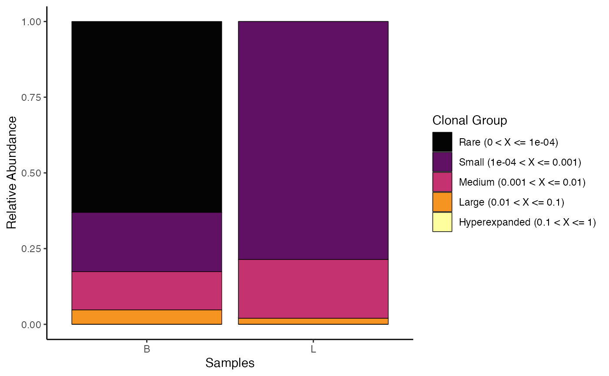
clonalAbundance() output can also be converted into a
density plot, which may allow for better comparisons between different
repertoire sizes, by setting scale = TRUE.
clonalAbundance(combined.TCR,
cloneCall = "gene",
scale = TRUE)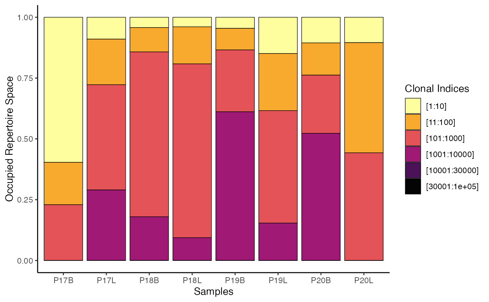
clonalLength: Distribution of Sequence Lengths
clonalLength() allows you to look at the length
distribution of the CDR3 sequences. Importantly, unlike the other basic
visualizations, the cloneCall can only be nt
(nucleotide) or aa (amino acid). Due to the method of
calling clones as outlined previously (e.g., using NA for unreturned
chain sequences or multiple chains within a single barcode), the length
distribution may reveal a multimodal curve.
To visualize the amino acid length distribution for both chains (“both”):
clonalLength(combined.TCR,
cloneCall="aa",
chain = "both") 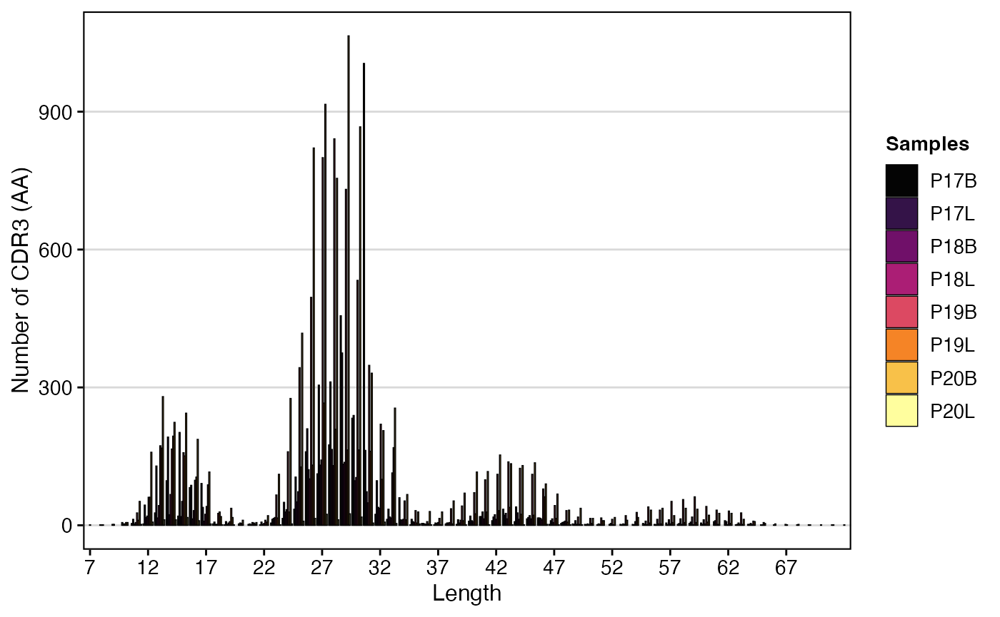
To visualize the amino acid length distribution for the
TRA chain, scaled as a density plot:
clonalLength(combined.TCR,
cloneCall="aa",
chain = "TRA",
scale = TRUE) 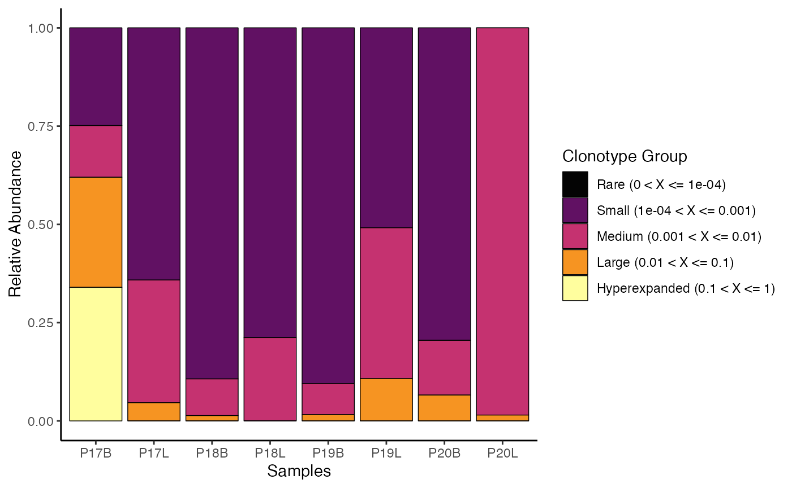
clonalCompare: Clonal Dynamics Between Categorical Variables
clonalCompare() allows you to look at clones between
samples and changes in dynamics. It is useful for tracking how the
proportions of top clones change between conditions.
Key Parameters for clonalCompare()
-
samples: A character vector to isolate specific samples by their list element name. -
clones: A character vector of specific clonal sequences to visualize. If used,top.cloneswill be ignored. *top.clones: The top n number of clones to graph, calculated based on the frequency within individual samples. -
highlight.clones: A character vector of specific clonal sequences to color; all other clones will be greyed out. -
relabel.clones: IfTRUE, simplifies the legend by labeling isolated clones numerically (e.g., “Clone: 1”). -
graph: The type of plot to generate;alluvial(default) orarea. -
proportion: IfTRUE(default), the y-axis represents proportional abundance; ifFALSE, it represents raw clone counts.
To compare the top 10 clones between samples “P17B” and “P17L” using amino acid sequences as an alluvial plot:
clonalCompare(combined.TCR,
top.clones = 10,
samples = c("P17B", "P17L"),
cloneCall="aa",
graph = "alluvial")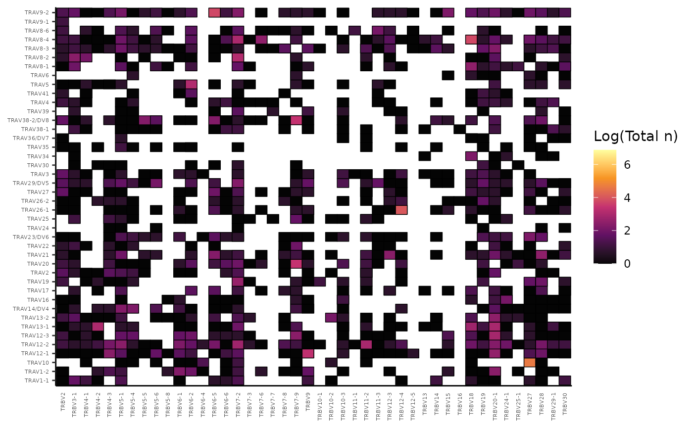
We can also choose to highlight specific clones, such as in the case
of “CVVSDNTGGFKTIF_CASSVRRERANTGELFF” and
“NA_CASSVRRERANTGELFF” using the highlight.clones
parameter. In addition, we can simplify the plot to label the clones as
“Clone: 1”, “Clone: 2”, etc., by setting
relabel.clones = TRUE.
clonalCompare(combined.TCR,
top.clones = 10,
highlight.clones = c("CVVSDNTGGFKTIF_CASSVRRERANTGELFF", "NA_CASSVRRERANTGELFF"),
relabel.clones = TRUE,
samples = c("P17B", "P17L"),
cloneCall="aa",
graph = "alluvial")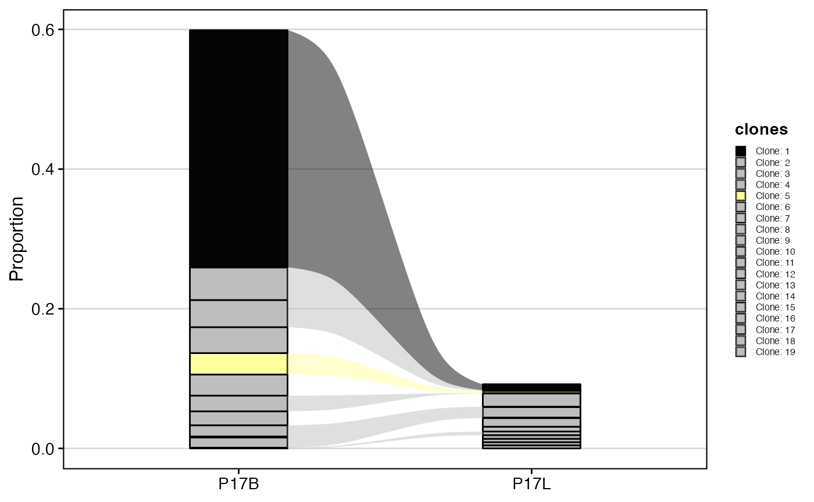
Alternatively, if we only want to show specific clones, we can use
the clones parameter.
clonalCompare(combined.TCR,
clones = c("CVVSDNTGGFKTIF_CASSVRRERANTGELFF", "NA_CASSVRRERANTGELFF"),
relabel.clones = TRUE,
samples = c("P17B", "P17L"),
cloneCall="aa",
graph = "alluvial")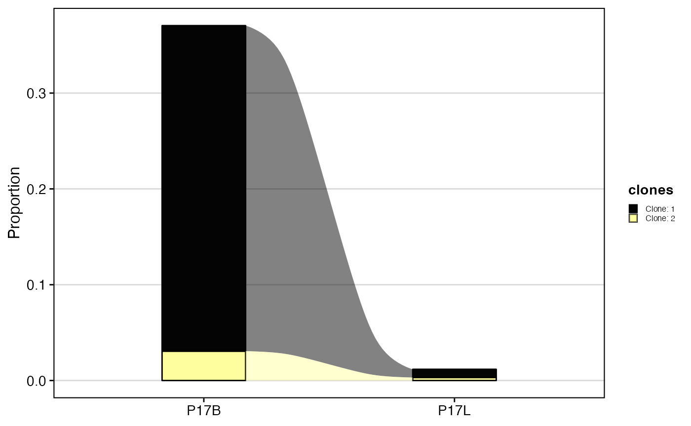
clonalScatter: Scatterplot of Two Variables
clonalScatter() organizes two repertoires, quantifies their relative clone sizes, and produces a scatter plot comparing the two samples. Clones are categorized by counts into singlets or expanded, either exclusively present or shared between the selected samples.
Key Parameter(s) for clonalScatter()
-
x.axis,y.axis: Names of the list elements or meta data variable to place on the x-axis and y-axis. -
dot.size: Specifies how dot size is determined;total(default) displays the total number of clones between the x- and y-axis, or a specific list element name for size calculation. -
graph: The type of graph to display;proportionfor the relative proportion of clones (default) orcountfor the total count of clones by sample.
To compare samples “P18B” and “P18L” based on gene clone
calls, with dot size representing the total number of clones, and
plotting clone proportions:
clonalScatter(combined.TCR,
cloneCall ="gene",
x.axis = "P18B",
y.axis = "P18L",
dot.size = "total",
graph = "proportion")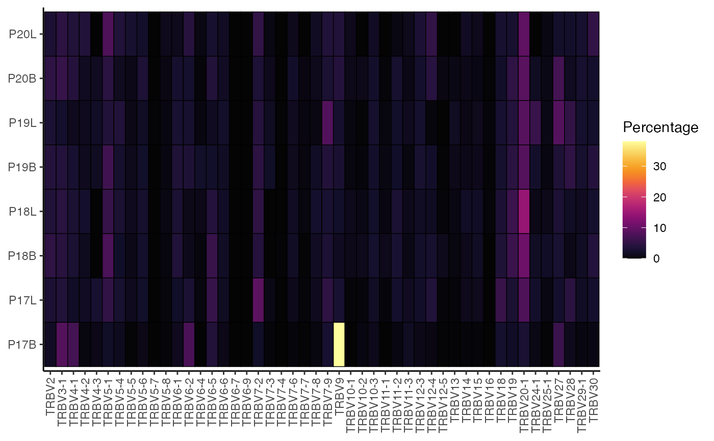
Visualizing Clonal Dynamics
clonalHomeostasis: Examining Clonal Space
By examining the clonal space, we effectively look at the relative
space occupied by clones at specific proportions. Another way to think
about this would be to consider the total immune receptor sequencing run
as a measuring cup. In this cup, we will fill liquids of different
viscosity—or different numbers of clonal proportions. Clonal space
homeostasis asks what percentage of the cup is filled by clones in
distinct proportions (or liquids of different viscosity, to extend the
analogy). The proportional cut points are set under the
cloneSize variable in the function and can be adjusted.
Default cloneSize Bins
- Rare: 0 to 0.0001
- Small: 0.0001 to 0.001
- Medium: 0.001 to 0.01
- Large: 0.01 to 0.1
- Hyperexpanded: 0.1 to 1
To visualize clonal homeostasis using gene clone calls with default
cloneSize bins:
clonalHomeostasis(combined.TCR,
cloneCall = "gene")
We can reassign the proportional cut points for
cloneSize, which can drastically alter the visualization
and analysis
clonalHomeostasis(combined.TCR,
cloneCall = "gene",
cloneSize = c(Rare = 0.001, Small = 0.01, Medium = 0.1,
Large = 0.3, Hyperexpanded = 1))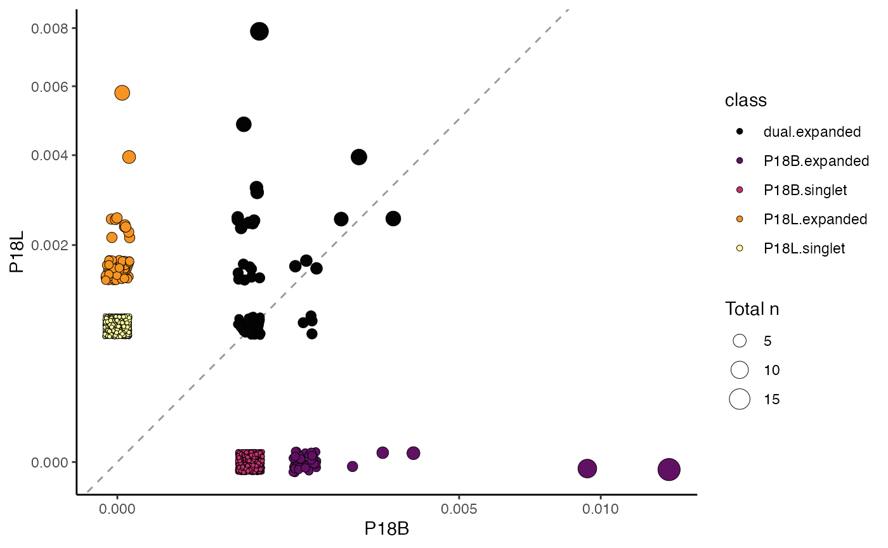
In addition, we can use the group.by parameter to look
at the relative proportion of clones between groups, such as by tissue
type. First, ensure the “Type” variable is added to
combined.TCR:
combined.TCR <- addVariable(combined.TCR,
variable.name = "Type",
variables = rep(c("B", "L"), 4))Now, visualize clonal homeostasis grouped by “Type”:
clonalHomeostasis(combined.TCR,
group.by = "Type",
cloneCall = "gene")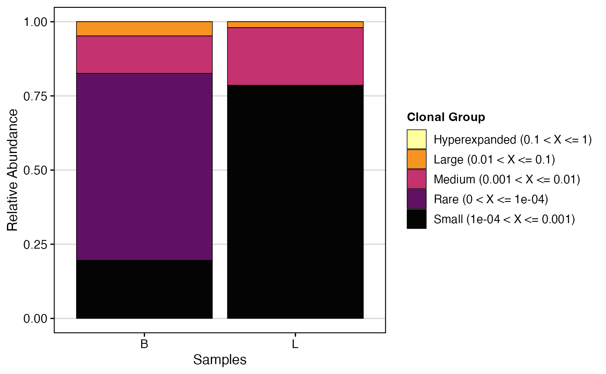
clonalHomeostasis() provides an assessment of how
different “sizes” of clones (based on their proportional abundance)
contribute to the overall repertoire. This visualization helps to
identify shifts in repertoire structure, such as expansion of large
clones in response to infection or contraction in chronic conditions,
offering insights into immune system activity and health.
clonalProportion: Examining Space Occupied by Ranks of Clones
Like clonal space homeostasis, clonalProportion() also
categorizes clones into separate bins. The key difference is that
instead of looking at the relative proportion of the clone to the total,
clonalProportion() ranks the clones by their total count or
frequency of occurrence and then places them into predefined bins.
The clonalSplit parameter represents the ranking of
clonotypes. For example, 1:10 refers to the top 10 clonotypes in each
sample. The default bins are set under the clonalSplit
variable and can be adjusted.
Default clonalSplit Bins
- 10 (top 1-10 clones)
- 100: (top 11-100 clones)
- 1000: (top 101-1000 clones)
- 10000: (top 1001-10000 clones)
- 30000: (top 10001-30000 clones)
- 100000: (top 30001-100000 clones)
To visualize the clonal proportion using gene clone
calls with default clonalSplit bins:
clonalProportion(combined.TCR,
cloneCall = "gene") 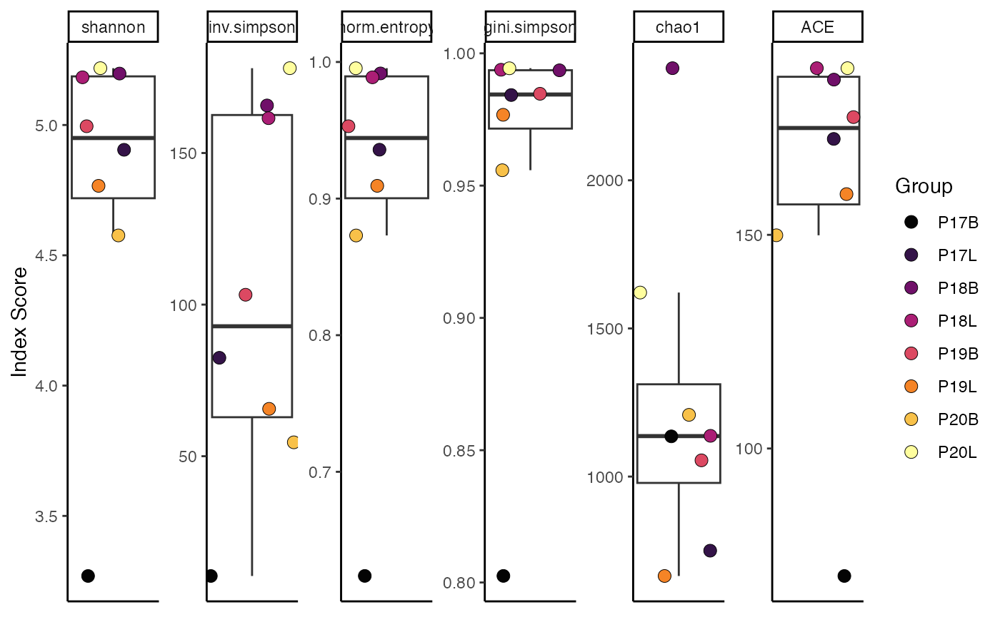
To visualize clonal proportion using nt (nucleotide)
clone calls with custom clonalSplit bins:
clonalProportion(combined.TCR,
cloneCall = "nt",
clonalSplit = c(1, 5, 10, 100, 1000, 10000)) 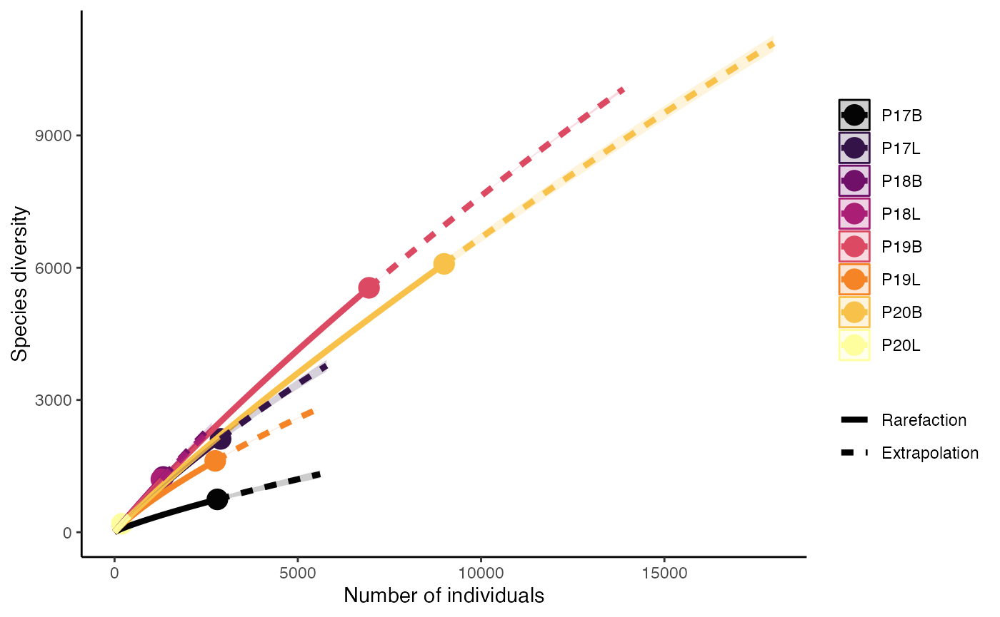
clonalProportion() complements
clonalHomeostasis() by providing a perspective on how the
“richest” (most abundant) clones contribute to the overall repertoire
space. By segmenting clones into rank-based bins, it helps identify
whether a few highly expanded clones or a larger number of moderately
expanded clones dominate the immune response, offering distinct insights
into repertoire structure and dynamics.
Summarizing Repertoires
percentGeneUsage
Gene quantification and visualization has been redesigned to offer a
more robust and translatable function under
percentGeneUsage(). We have maintained the functionality of
the previous functions for gene-level quantification under the aliases
vizGenes(), percentGenes(), and
percentVJ().
vizGenes: Flexible Gene Usage Visualization
The vizGenes() function offers a highly adaptable
approach to visualizing the relative usage of TCR or BCR genes. It acts
as a versatile alias for percentGeneUsage(), allowing for
comparisons across different chains, scaling of values, and selection
between bar charts and heatmaps.
-
x.axis: Specifies the gene segment to display along the x-axis (e.g., “TRBV”, “TRBD”, “IGKJ”). -
y.axis- Another gene segment (e.g., “TRAV”, “TRBJ”) for paired gene analysis. When x.axis and y.axis are both gene segments, vizGenes() internally calls percentGeneUsage() with genes = c(x.axis, y.axis), resulting in a heatmap.
- A categorical variable (e.g., “sample”, “orig.ident”) to visualize gene usage across different groups. When y.axis is a categorical variable, vizGenes() maps it to the group.by parameter of percentGeneUsage(), creating facets for each category.
-
plot: Determines the visualization type:- “barplot”: Ideal for visualizing the distribution of a single gene segment.
- “heatmap”: Suitable for single gene usage (with a group.by or y.axis categorical variable) or for paired gene analysis.
-
summary.fun: (Inherited frompercentGeneUsage) Defines the statistic to display: “percent” (default), “proportion”, or “count”. This implicitly handles the scaling of values.
vizGenes(combined.TCR,
x.axis = "TRBV",
y.axis = NULL, # No specific y-axis variable, will group all samples
plot = "barplot",
summary.fun = "proportion") 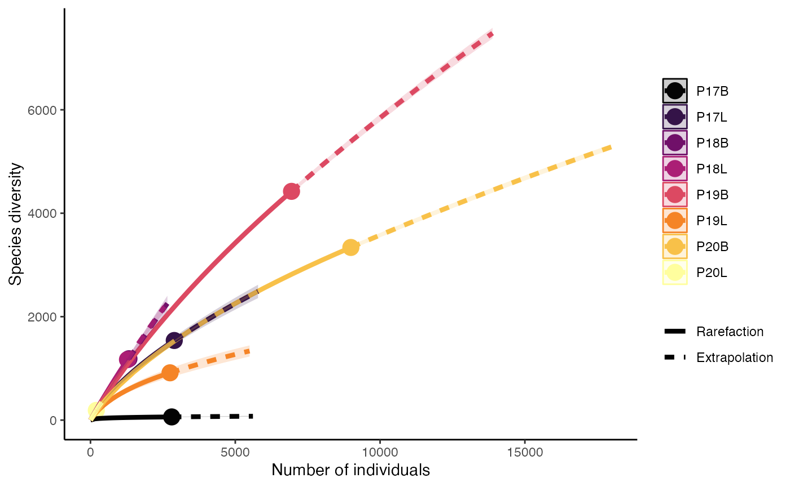
This plot shows the proportion of each TRBV gene segment
observed across the entire combined.TCR dataset. Since
y.axis is NULL, samples are grouped by the list element of
the combined.TCR data.
vizGenes() is particularly useful for examining gene
pairings. Let’s look at the differences in TRBV and
TRBJ usage between peripheral blood and lung samples from your
dataset. We’ll subset combined.TCR for this analysis.
# Peripheral Blood Samples
vizGenes(combined.TCR[c("P17B", "P18B", "P19B", "P20B")],
x.axis = "TRBV",
y.axis = "TRBJ",
plot = "heatmap",
summary.fun = "percent") # Display percentages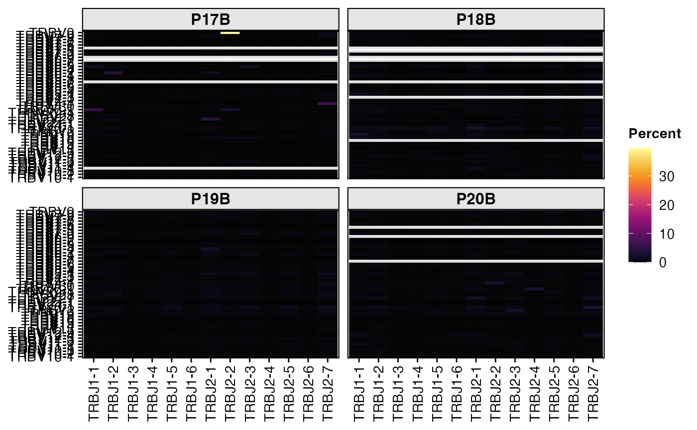
# Lung Samples
vizGenes(combined.TCR[c("P17L", "P18L", "P19L", "P20L")],
x.axis = "TRBV",
y.axis = "TRBJ",
plot = "heatmap",
summary.fun = "percent") # Display percentages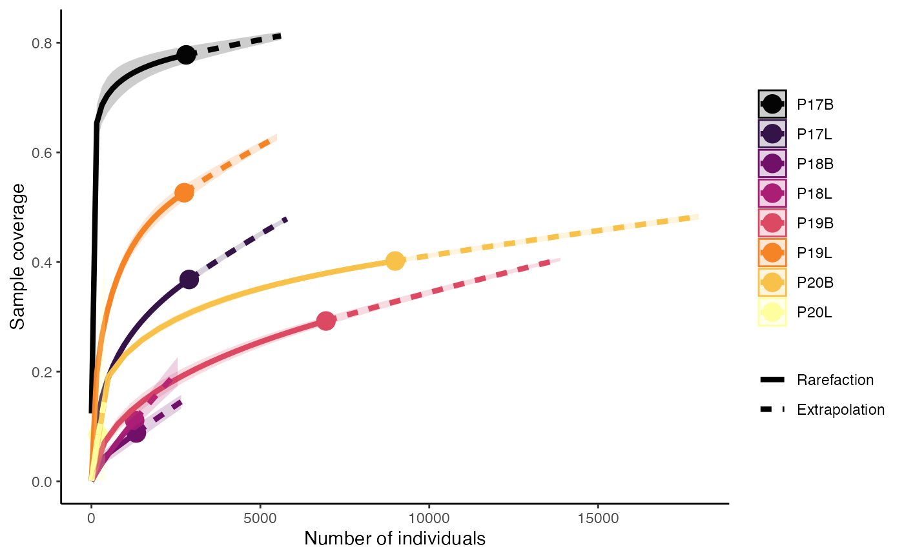
In these examples, by providing both x.axis and
y.axis as gene segments (“TRBV” and “TRBJ”),
vizGenes() automatically performs a paired gene analysis,
generating a heatmap where the intensity reflects the percentage of each
V-J pairing.
Beyond V-J pairings within a single chain, vizGenes()
can also visualize gene usage across different chains. For instance, to
examine TRBV and TRAV pairings for patient P17’s
samples:
vizGenes(combined.TCR[c("P17B", "P17L")],
x.axis = "TRBV",
y.axis = "TRAV",
plot = "heatmap",
summary.fun = "count") 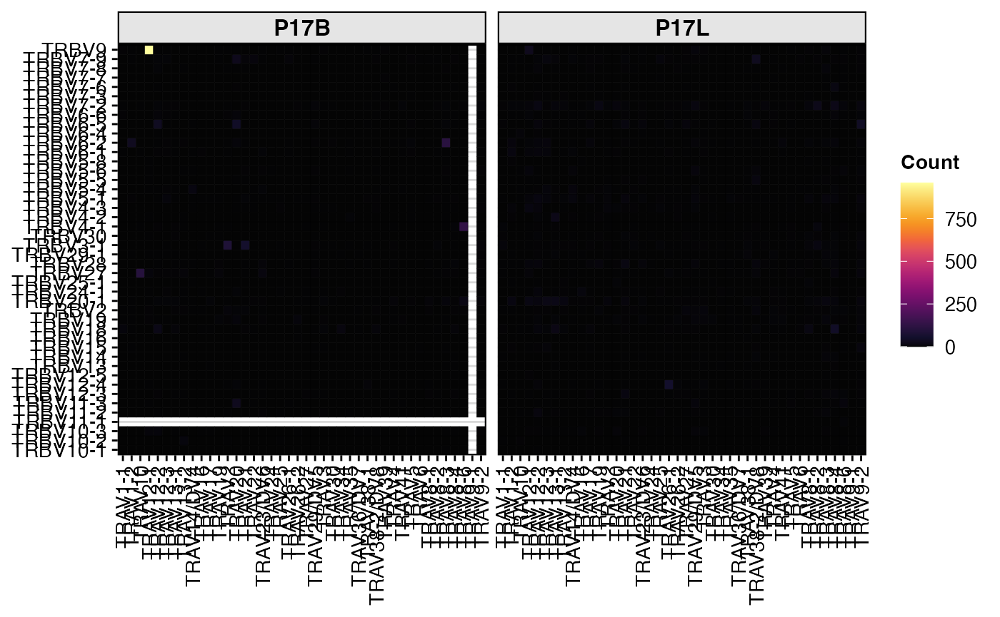
percentGenes: Quantifying Single Gene Usage
The percentGenes() function is a specialized alias for
percentGeneUsage() designed to quantify the usage of a
single V, D, or J gene locus for a specified immune receptor chain. By
default, it returns a heatmap visualization.
Key Parameters for percentGenes():
-
chain: Specifies the immune receptor chain (e.g., “TRB”, “TRA”, “IGH”, “IGL”). -
gene: Indicates the gene locus to quantify: “Vgene”, “Dgene”, or “Jgene”. -
group.by,order.by,summary.fun,exportTable,palette: These parameters are directly passed topercentGeneUsage().
To quantify and visualize the percentage of TRBV gene usage across your samples:
percentGenes(combined.TCR,
chain = "TRB",
gene = "Vgene",
summary.fun = "percent")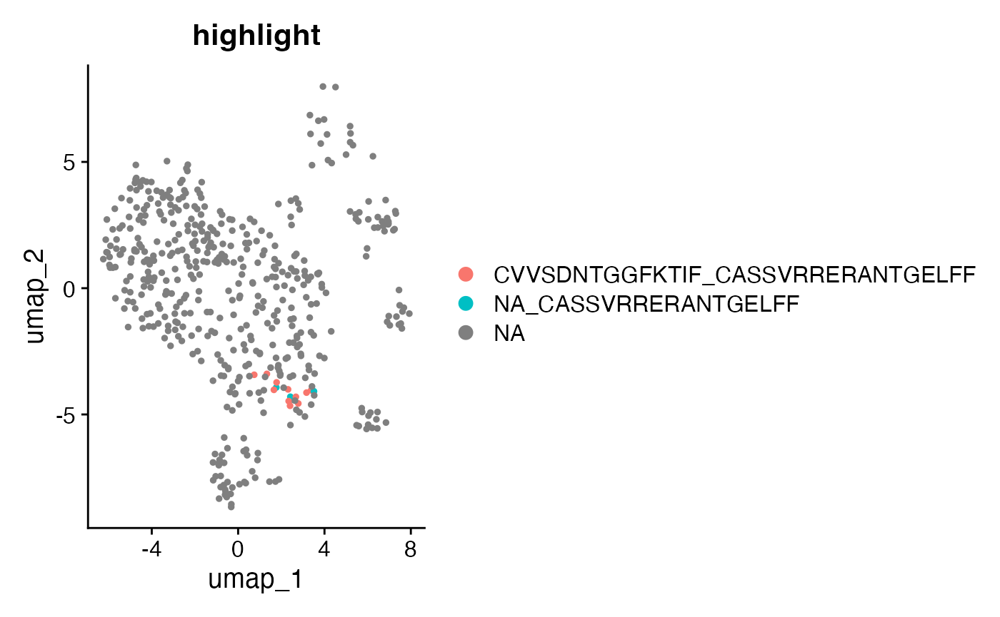
This generates a heatmap showing the percentage of each TRBV gene segment within each sample, allowing for easy visual comparison of gene usage profiles across your samples.
The raw data returned by percentGenes() (when
exportTable = TRUE) can be a powerful input for further
downstream analysis, such as dimensionality reduction techniques like
Principal Component Analysis. This allows you to summarize the complex
gene usage patterns and identify samples with similar or distinct
repertoires.
df.genes <- percentGenes(combined.TCR,
chain = "TRB",
gene = "Vgene",
exportTable = TRUE,
summary.fun = "proportion")
# Performing PCA on the gene usage matrix
pc <- prcomp(t(df.genes) )
# Getting data frame to plot from
df_plot <- as.data.frame(cbind(pc$x[,1:2], colnames(df.genes)))
colnames(df_plot) <- c("PC1", "PC2", "Sample")
df_plot$PC1 <- as.numeric(df_plot$PC1)
df_plot$PC2 <- as.numeric(df_plot$PC2)
ggplot(df_plot, aes(x = PC1, y = PC2)) +
geom_point(aes(fill = Sample), shape = 21, size = 5) +
guides(fill=guide_legend(title="Samples")) +
scale_fill_manual(values = hcl.colors(nrow(df_plot), "inferno")) +
theme_classic() +
labs(title = "PCA of TRBV Gene Usage")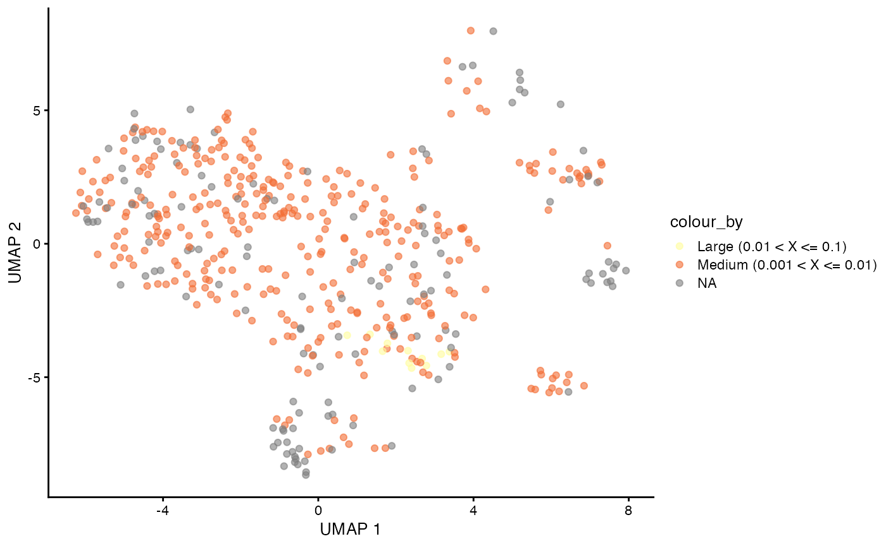
This PCA plot visually clusters samples based on their TRBV gene usage profiles, helping to identify underlying patterns or relationships between samples.
percentVJ: Quantifying V-J Gene Pairings
The percentVJ() function is another specialized alias
for percentGeneUsage(), specifically designed to quantify
the proportion or percentage of V and J gene segments paired together
within individual repertoires. It always produces a heatmap
visualization.
Key Parameters for percenVJ():
-
chain: Specifies the immune receptor chain (e.g., “TRB”, “TRA”, “IGH”, “IGL”). This dictates which V and J gene segments are analyzed (e.g., TRBV and TRBJ forchain= “TRB”)
percentVJ(combined.TCR[1:2],
chain = "TRB",
summary.fun = "percent")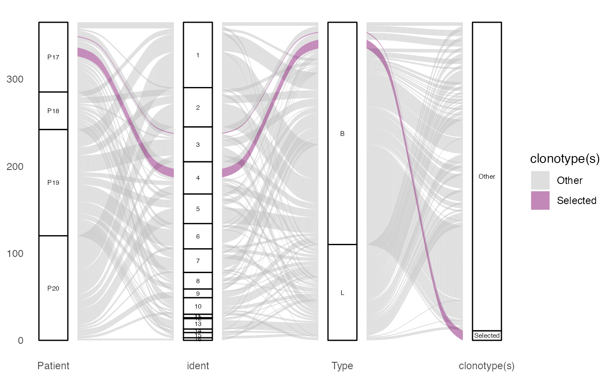
This heatmap displays the percentage of each TRBV-TRBJ pairing for each sample, providing a detailed view of the V-J recombination landscape.
Similar to percentGenes(), the quantitative output of
percentVJ() can be used for dimensionality reduction to
summarize V-J pairing patterns across samples.
df.vj <- percentVJ(combined.TCR,
chain = "TRB",
exportTable = TRUE,
summary.fun = "proportion") # Export proportions for PCA
# Performing PCA on the V-J pairing matrix
pc.vj <- prcomp(t(df.vj))
# Getting data frame to plot from
df_plot_vj <- as.data.frame(cbind(pc.vj$x[,1:2], colnames(df.vj)))
colnames(df_plot_vj) <- c("PC1", "PC2", "Sample")
df_plot_vj$PC1 <- as.numeric(df_plot_vj$PC1)
df_plot_vj$PC2 <- as.numeric(df_plot_vj$PC2)
# Plotting the PCA results
ggplot(df_plot_vj, aes(x = PC1, y = PC2)) +
geom_point(aes(fill = Sample), shape = 21, size = 5) +
guides(fill=guide_legend(title="Samples")) +
scale_fill_manual(values = hcl.colors(nrow(df_plot_vj), "inferno")) +
theme_classic() +
labs(title = "PCA of TRBV-TRBJ Gene Pairings")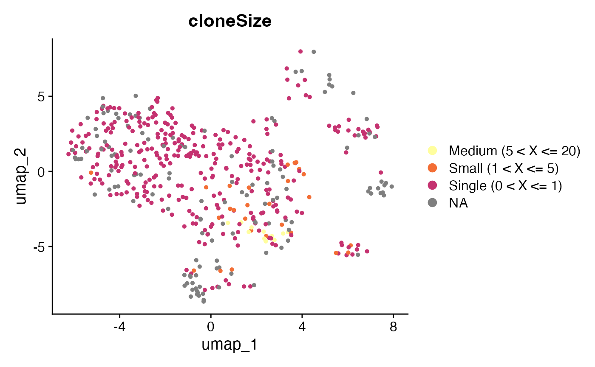
percentAA: Amino Acid Composition by Residue
Quantify the proportion of amino acids along the CDR3 sequence with
percentAA(). By default, the function will pad the
sequences with NAs up to the maximum of aa.length.
Sequences longer than aa.length will be removed before visualization
(default aa.length = 20).
Key Parameter(s) for percentAA()
-
aa.length: The maximum length of the CDR3 amino acid sequence to consider.
To visualize the relative percentage of amino acids at each position of the CDR3 sequences for the TRB chain, up to a length of 20 amino acids:
percentAA(combined.TCR,
chain = "TRB",
aa.length = 20)
This plot displays the relative proportion of each amino acid at different positions across the CDR3 sequence for the specified chain. It provides insights into the amino acid composition and variability at each residue, which can be indicative of functional constraints or selection pressures on the CDR3
positionalEntropy: Entropy across CDR3 Sequences
We can also quantify the level of entropy/diversity across amino acid
residues along the CDR3 sequence. positionalEntropy()
combines the quantification by residue of percentAA() with
diversity calculations. Positions without variance will have a value
reported as 0 for the purposes of comparison.
Key Parameter(s) for positionalEntropy()
-
method-
shannon- Shannon Index -
inv.simpson- Inverse Simpson Index -
gini.simpson- Gini-Simpson Index -
norm.entropy- Normalized Entropy -
pielou- Pielou’s Evenness -
hill1,hill2,hill3- Hill Numbers
-
To visualize the normalized entropy across amino acid residues for the TRB chain, up to a length of 20 amino acids:
positionalEntropy(combined.TCR,
chain = "TRB",
aa.length = 20)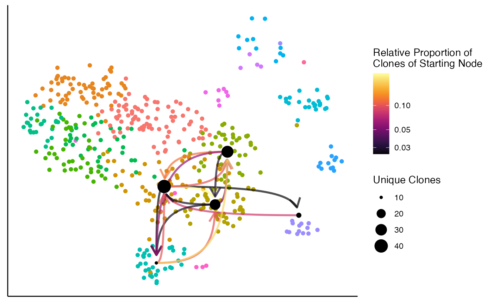
The plot generated by positionalEntropy() illustrates
the diversity or entropy at each amino acid position within the CDR3
sequence. Higher entropy values indicate greater variability in amino
acid usage at that position, suggesting less selective pressure or more
promiscuous binding, while lower values suggest conserved positions
critical for structural integrity or antigen recognition.
positionalProperty: Amino Acid Properties across CDR3 Sequence
Like positionalEntropy(), we can also examine a series
of amino acid properties along the CDR3 sequences using
positionalProperty(). Important differences for
positionalProperty() is dropping NA values as they would
void the mean calculation and displaying a ribbon with the 95%
confidence interval surrounding the mean value for the selected
properties.
Key Parameter(s) for positionalEntropy()
-
method
To examine the Atchley factors of amino acids across the CDR3 sequence for the first two samples:
positionalProperty(combined.TCR[c(1,2)],
chain = "TRB",
aa.length = 20,
method = "atchleyFactors") +
scale_color_manual(values = hcl.colors(5, "inferno")[c(2,4)])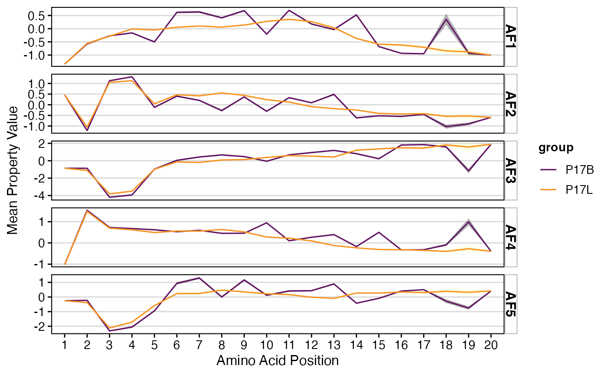
This function provides a detailed view of how physicochemical properties of amino acids change along the CDR3 sequence. By visualizing the mean property value and its confidence interval, one can identify positions with distinct characteristics or significant variations between groups, offering insights into structural and functional aspects of the CDR3.
percentKmer: Motif Quantification
Another quantification of the composition of the CDR3 sequence is to define motifs by sliding across the amino acid or nucleotide sequences at set intervals, resulting in substrings or kmers.
Key Parameter(s) for percentKmer():
-
cloneCall: Defines the clonal sequence grouping; only acceptsaa(amino acids) ornt(nucleotides) -
motif.length: The length of the kmer to analyze. -
top.motifs: Displays the n most variable motifs as a function of median absolute deviation.
To visualize the percentage of the top 25 most variable 3-mer amino acid motifs for the TRB chain:
percentKmer(combined.TCR,
cloneCall = "aa",
chain = "TRB",
motif.length = 3,
top.motifs = 25)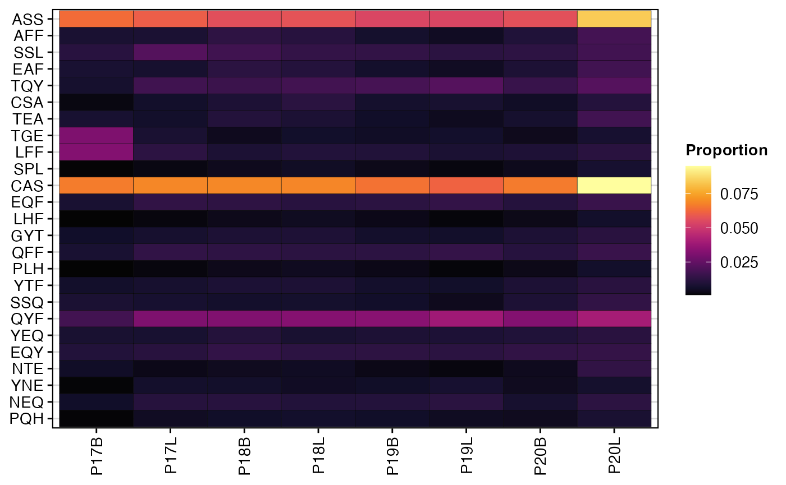
To perform the same analysis but for nucleotide motifs:
percentKmer(combined.TCR,
cloneCall = "nt",
chain = "TRB",
motif.length = 3,
top.motifs = 25)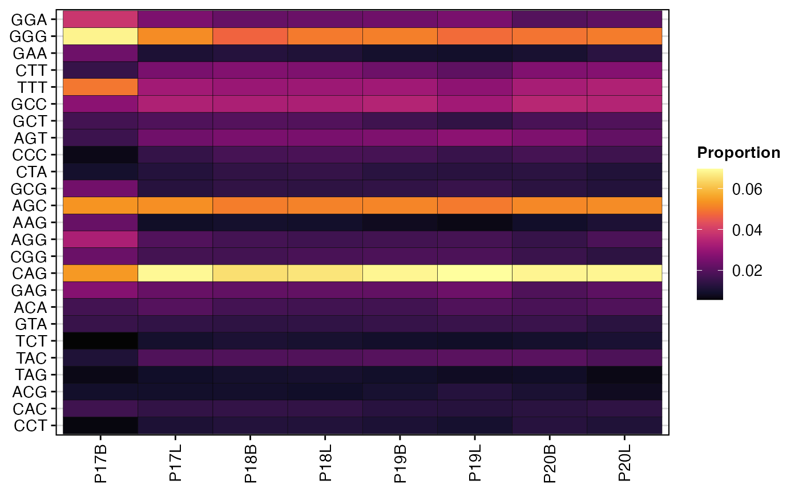
The heatmaps generated by percentKmer() illustrate the
relative composition of frequently occurring k-mer motifs across samples
or groups. This analysis can highlight recurrent sequence patterns in
the CDR3, which may be associated with specific antigen recognition,
disease states, or processing mechanisms. By examining the most variable
motifs, researchers can identify key sequence features that
differentiate immune repertoires.
Comparing Clonal Diversity and Overlap
clonalDiversity: Clonal Diversity Quantification
Diversity can be measured for samples or by other variables.
clonalDiversity() calculates a specified diversity metric
for groups within a dataset. To control for variations in library size,
the function can perform bootstrapping with downsampling. It resamples
each group to the size of the smallest group and calculates the
diversity metric across multiple iterations, returning the mean
values.
How clonalDiversity() Handles Downsampling and
Bootstrapping
- It determines the number of clones in the smallest group.
- For each group, it performs
n.bootsiterations (default = 100). - In each iteration, it randomly samples the clones (with replacement) down to the size of the smallest group.
- It calculates the selected diversity metric on this downsampled set.
- The final reported diversity value is the mean of the results from all bootstrap iterations.
- This process can be disabled by setting
skip.boots = TRUE.
Available Diversity Metrics (metric)
| Metric | What it measures | Typical scale | Higher value indicates… |
|---|---|---|---|
shannon |
Joint richness + evenness of clonotypes; moderately sensitive to rare clones (entropy of the frequency distribution). | 0 → ∞ | More distinct clonotypes and a more even clone-size distribution. |
inv.simpson |
Evenness-weighted diversity (inverse Simpson’s D); heavily penalises dominance by a few large clones. | 1 → ∞ | Few highly dominant clones; diversity spread across many mid-abundance clones. |
norm.entropy |
Shannon entropy divided by ln S (where S = no. clonotypes); removes library-size dependence. | 0 → 1 | Same interpretation as shannon, but
comparable across samples of different depths. |
gini.simpson |
1 – Simpson’s D; probability that two reads drawn at random come from different clonotypes. | 0 → 1 | Greater heterogeneity (higher chance the two reads represent distinct clones). |
chao1 |
Estimated richness only (number of clonotypes), correcting for unseen singletons/doubletons. | 0 → ∞ | More unique clonotypes, regardless of their relative abundances. |
ACE |
Abundance-based Coverage Estimator—alternative richness estimator robust when many clones are rare. | 0 → ∞ | More unique clonotypes, especially when the repertoire contains many low-frequency clones. |
gini |
Inequality of clone size distribution (Gini Coefficient); measures how unevenly clone sizes are distributed. | 0 → 1 | Greater inequality; a few highly abundant clones dominate the repertoire. |
d50 |
Repertoire dominance; how many of the top clones are needed to constitute 50% of the total library. | 1 → ∞ | Less dominance by top clones; the repertoire is more evenly distributed. |
hill0 |
Richness (Hill number q=0); the total number of unique clonotypes observed in the sample. | 0 → ∞ | More unique clonotypes (greater raw richness). |
hill1 |
Effective number of abundant clonotypes (Hill number q=1); the exponential of Shannon entropy. | 1 → ∞ | Higher diversity of common clonotypes, balancing richness and evenness. |
hill2 |
Effective number of dominant clonotypes (Hill number q=2); equivalent to the inverse Simpson index. | 1 → ∞ | Higher diversity among the most dominant clonotypes in the repertoire. |
Key Parameters for clonalDiversity()
-
metric: The diversity metric to calculate. -
x.axis: An additional metadata variable to group samples along the x-axis. -
return.boots: IfTRUE, returns all bootstrap values instead of the mean. -
skip.boots: IfTRUE, disables downsampling and bootstrapping. -
n.boots: The number of bootstrap iterations to perform (default is 100).
To calculate Shannon diversity, grouped by sample:
clonalDiversity(combined.TCR,
cloneCall = "gene")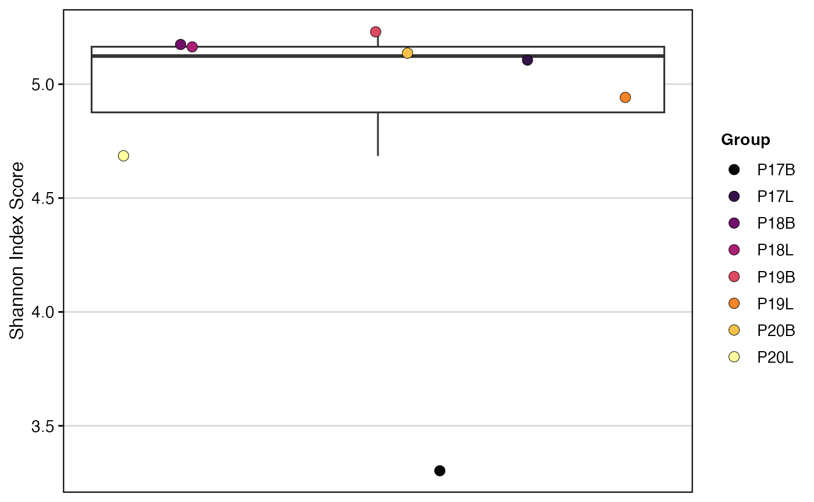
There are two options for grouping in clonalDiversity():
group.by and x.axis.
-
group.by: Reorganizes the clone information into new groups that the calculation will be based on. -
x.axis: Keeps the organization of the clone information the same, but plots along the x-axis for improved visibility or grouping.
First, add a “Patient” variable to combined.TCR
combined.TCR <- addVariable(combined.TCR,
variable.name = "Patient",
variables = c("P17", "P17", "P18", "P18",
"P19","P19", "P20", "P20"))Now, calculate Inverse Simpson diversity, grouped by “Patient”:
clonalDiversity(combined.TCR,
cloneCall = "gene",
group.by = "Patient",
metric = "inv.simpson")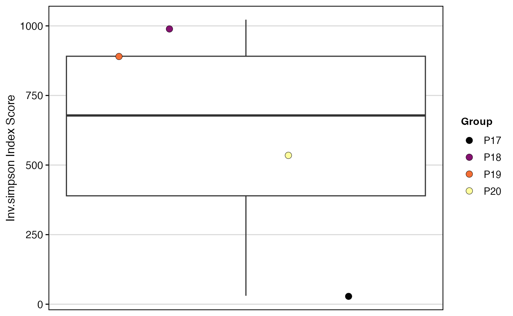
Calculate Inverse Simpson diversity with “Patient” on the x-axis, keeping the original grouping:
clonalDiversity(combined.TCR,
cloneCall = "gene",
x.axis = "Patient",
metric = "inv.simpson")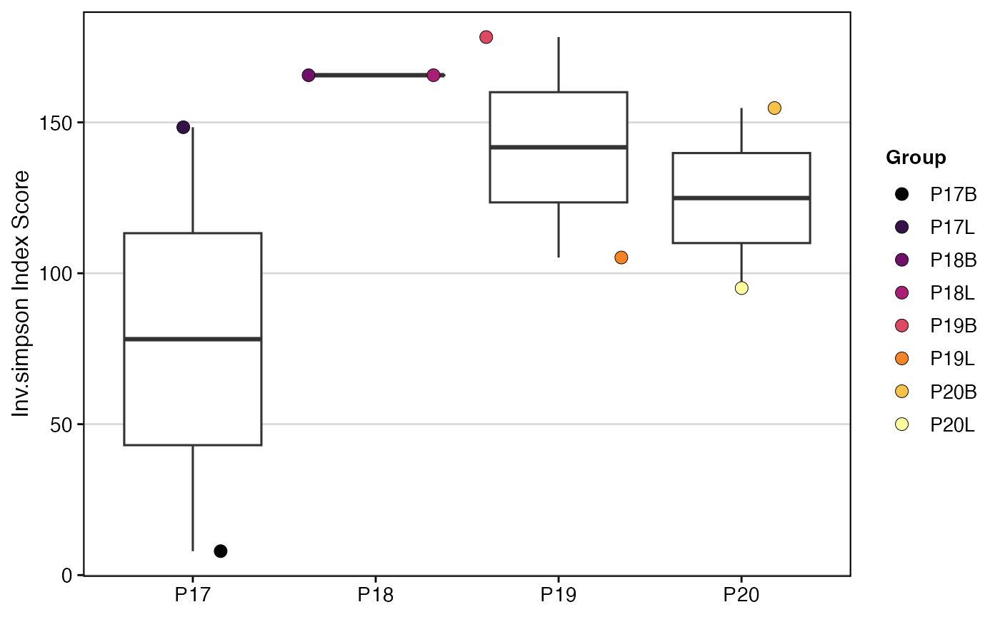
clonalDiversity() functions in quantifying and comparing
the diversity of immune repertoires across different samples or
experimental conditions. By implementing bootstrapping and offering a
wide range of diversity metrics, it provides robust and comparable
measures of clonal richness and evenness, which are fundamental for
understanding immune responses and disease states
clonalRarefaction: Sampling-based Extrapolation
clonalRarefaction() uses Hill numbers to estimate
rarefaction, or estimating species richness, based on the abundance of
clones across groupings. The underlying rarefaction calculation uses the
observed receptor abundance to compute diversity. This function relies
on the iNEXT R package.
plot.type Options
-
1: Sample-size-based rarefaction/extrapolation curve -
2: Sample completeness curve -
3: Coverage-based rarefaction/extrapolation curve
Key Parameter(s) for clonalRarefaction()
-
plot.type: The type of plot to generate. -
hill.numbers: The Hill numbers to be plotted (0, 1, or 2). -
n.boots: The number of bootstrap replicates used to derive confidence intervals (default is 20).
This function relies on the iNEXT with the accompanying manuscript. Like the other wrapping functions in scRepertoire, please cite the original work. The sample completeness curve (plot.type = 2), may not show full sample coverage due to the size/diversity of the input data.
Rarefaction using Species Richness (q = 0)
clonalRarefaction(combined.TCR,
plot.type = 1,
hill.numbers = 0,
n.boots = 2)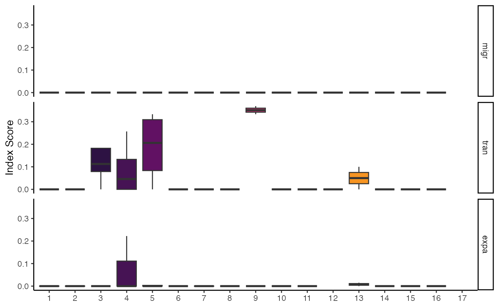
clonalRarefaction(combined.TCR,
plot.type = 2,
hill.numbers = 0,
n.boots = 2)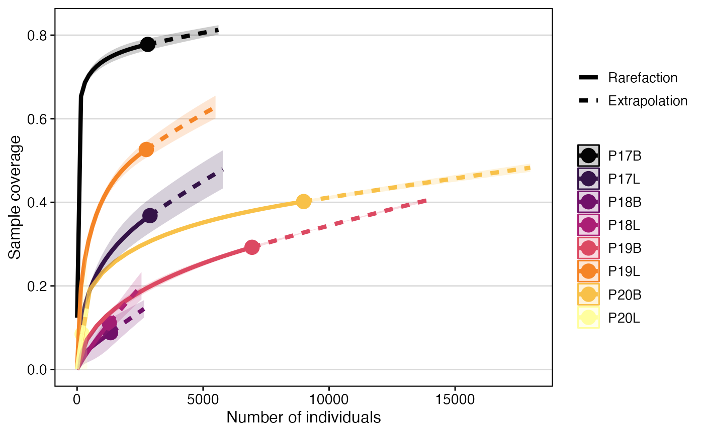
clonalRarefaction(combined.TCR,
plot.type = 3,
hill.numbers = 0,
n.boots = 2)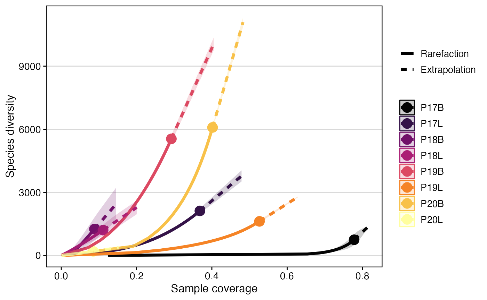
Rarefaction using Shannon Diversity (q = 1)
clonalRarefaction(combined.TCR,
plot.type = 1,
hill.numbers = 1,
n.boots = 2)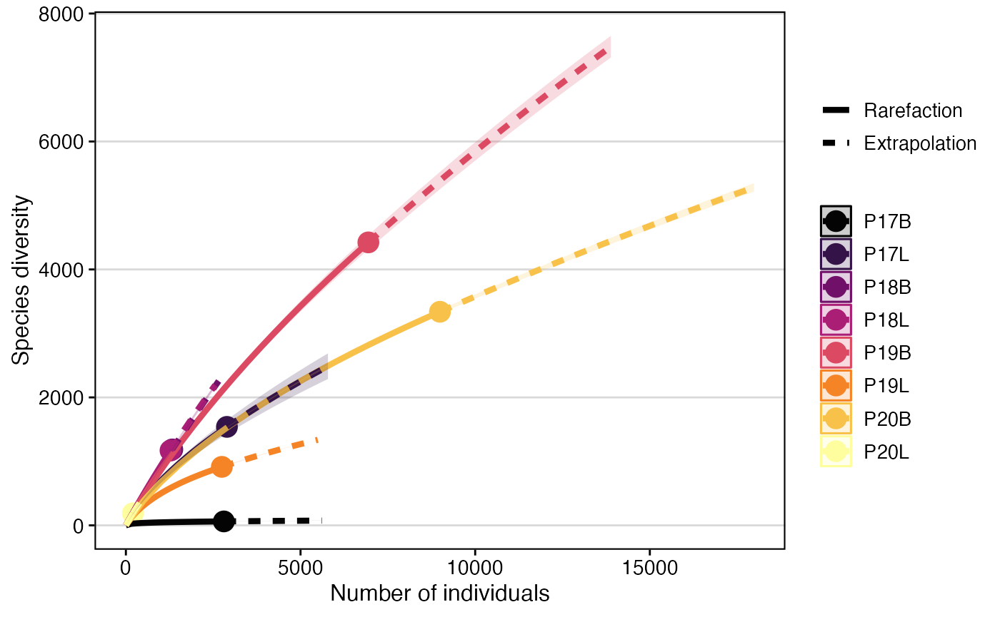
clonalRarefaction(combined.TCR,
plot.type = 2,
hill.numbers = 1,
n.boots = 2)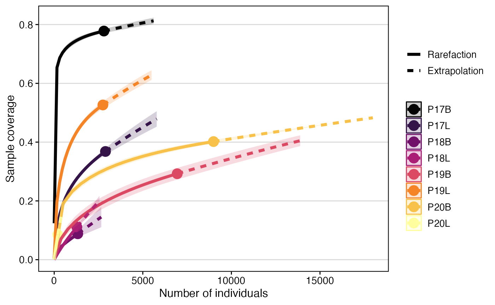
clonalRarefaction(combined.TCR,
plot.type = 3,
hill.numbers = 1,
n.boots = 2)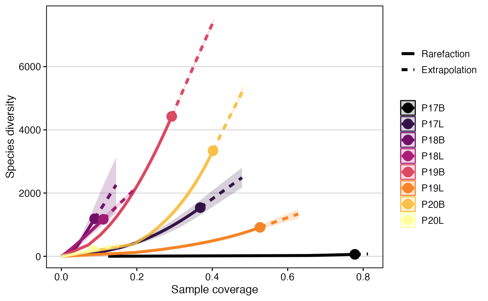
clonalRarefaction() provides robust estimates of immune
repertoire diversity, allowing for comparison of richness and effective
diversity across samples, even with varying sequencing depths. By
visualizing rarefaction and extrapolation curves, researchers can assess
the completeness of their sampling and make fair comparisons of
diversity, which is essential for understanding immune complexity.
clonalSizeDistribution: Modeling Clonal Composition
Another method for modeling the repertoire distribution is a discrete gamma-GPD spliced threshold model, proposed by Koch et al. The spliced model models the repertoire and allows for the application of a power law distribution for larger clonal-expanded sequences and a Poisson distribution for smaller clones. After fitting the models, repertoires can be compared using Euclidean distance. If using this function, please read/cite Koch et al. and check out the powerTCR R package.
Key Parameter(s) for clonalSizeDistribution()
-
method: The agglomeration method for hierarchical clustering (e.g., “ward.D2”).
To model the clonal size distribution using amino acid clone calls and hierarchical clustering with the “ward.D2” method:
clonalSizeDistribution(combined.TCR,
cloneCall = "aa",
method= "ward.D2")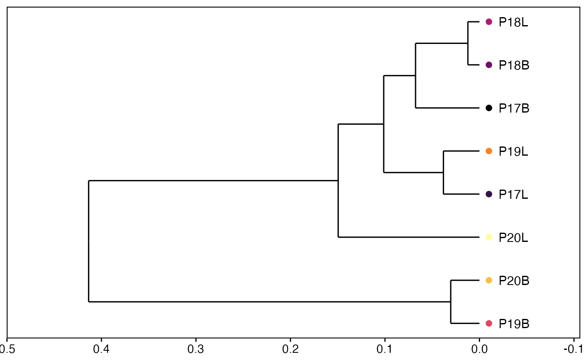
clonalSizeDistribution() offers a sophisticated approach
to modeling immune repertoire composition, distinguishing between the
distribution of rare and expanded clones. By applying a spliced
statistical model, it provides a more accurate representation of the
repertoire’s underlying clonal architecture, enabling robust comparisons
and a deeper understanding of immune system dynamics.
clonalOverlap: Exploring Sequence Overlap
If you are interested in measures of similarity between the samples
loaded into scRepertoire, using clonalOverlap() can assist
in the visualization. The underlying clonalOverlap()
calculation varies by the method parameter.
method Parameters for clonalOverlap()
-
overlap- Overlap coefficient -
morisita- Morisita’s overlap index -
jaccard- Jaccard index -
cosine- Cosine similarity -
raw- Exact number of overlapping clones
To calculate and visualize the Morisita overlap index using strict clone calls:
clonalOverlap(combined.TCR,
cloneCall = "strict",
method = "morisita")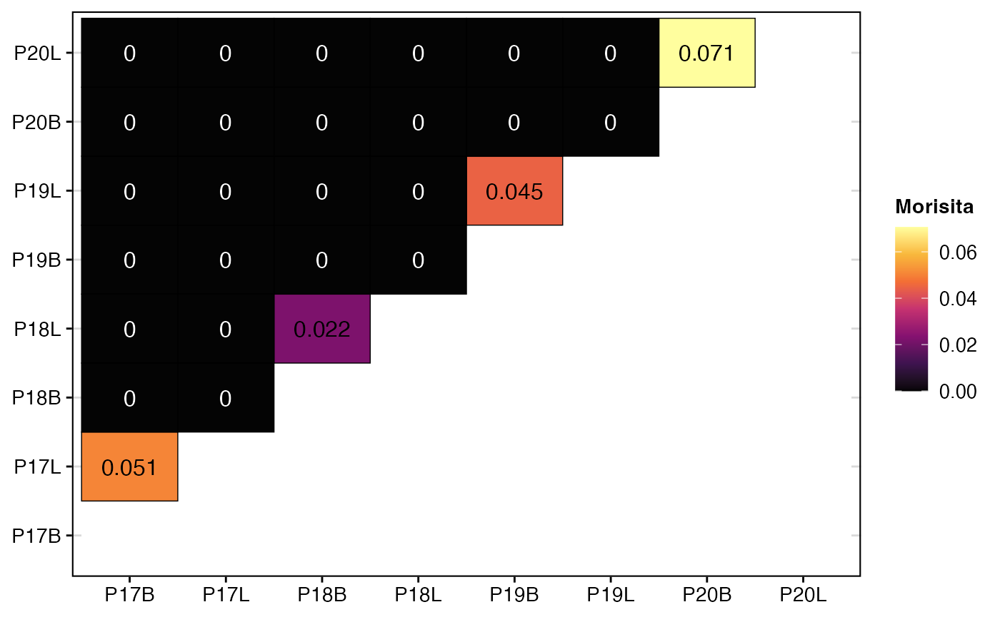
To calculate and visualize the raw number of overlapping clones using strict clone calls:
clonalOverlap(combined.TCR,
cloneCall = "strict",
method = "raw")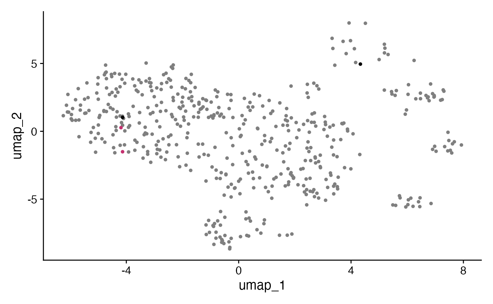
clonalOverlap() is a tool for assessing the similarity
and shared clonotypes between different immune repertoires. By offering
various quantitative methods and a clear heatmap visualization, it
allows researchers to identify the degree of overlap, providing insights
into shared immune responses, cross-reactivity, or the impact of
different treatments on clonal composition.
Combining Clones and Single-Cell Objects
The data in the scRepertoire package is derived from a study of acute
respiratory stress disorder in the context of bacterial and COVID-19
infections. The internal single cell data (scRep_example())
built in to scRepertoire is randomly sampled 500 cells from the fully
integrated Seurat object to minimize the package size. We will use both
Seurat and Single-Cell Experiment (SCE) with scater to perform further
visualizations in tandem.
Preprocessed Single-Cell Object
scRep_example <- get(data("scRep_example"))
#Making a Single-Cell Experiment object
sce <- Seurat::as.SingleCellExperiment(scRep_example)
#Adding patient information
scRep_example$Patient <- substr(scRep_example$orig.ident, 1,3)
#Adding type information
scRep_example$Type <- substr(scRep_example$orig.ident, 4,4)Note on Dimensional Reduction
In single-cell RNA sequencing workflows, dimensional reduction is typically performed by first identifying highly variable features. These features are then used directly for UMAP/tSNE projection or as inputs for principal component analysis. The same approach is commonly applied to clustering as well.
However, in immune-focused datasets, VDJ genes from TCR and BCR are often among the most variable genes. This variability arises naturally due to clonal expansion and diversity within lymphocytes. As a result, UMAP projections and clustering outcomes may be influenced by clonal information rather than broader transcriptional differences across cell types.
To mitigate this issue, a common strategy is to exclude VDJ genes from the set of highly variable features before proceeding with clustering and dimensional reduction. We introduce a set of functions that facilitate this process by removing VDJ-related genes from either a Seurat Object or a vector of gene names (useful for SCE-based workflows).
Functions to Exclude VDJ Genes
-
quietVDJgenes()– Removes both TCR and BCR VDJ genes. -
quietTCRgenes()– Removes only TCR VDJ genes. -
quietBCRgenes()– Removes only BCR VDJ genes, but retains BCR VDJ pseudogenes in the variable features.
Let’s first check the top 10 variable features in the scRep_example Seurat object before any removal:
# Check the first 10 variable features before removal
VariableFeatures(scRep_example)[1:10]## [1] "TRBV7-2" "HSPA1B" "HSPA1A" "TRBV4-1" "CCL4" "TRBV5-1"
## [7] "TRBV10-3" "TRBV3-1" "TRBV6-6" "CD79A"Now, we’ll remove TCR VDJ genes from the scRep_example object:
# Remove TCR VDJ genes
scRep_example <- quietTCRgenes(scRep_example)
# Check the first 10 variable features after removal
VariableFeatures(scRep_example)[1:10]## [1] "HSPA1B" "HSPA1A" "CCL4" "CD79A" "HLA-DRA" "CCL20" "TUBA1B"
## [8] "HSPA6" "TNF" "MS4A1"By applying these functions, you can ensure that clustering and dimensional reduction are driven by broader transcriptomic differences across cell types rather than being skewed by the inherent variability due to clonal expansion. This provides a more accurate representation of cellular heterogeneity independent of clonal lineage.
Preprocessed Single-Cell Object
The data in the scRepertoire package is derived from a
study of acute
respiratory stress disorder in the context of bacterial and COVID-19
infections. The internal single cell data (scRep_example())
built in to scRepertoire is randomly sampled 500 cells from the fully
integrated Seurat object to minimize the package size. However, for the
purpose of the vignette we will use the full single-cell object with
30,000 cells. We will use both Seurat and Single-Cell Experiment (SCE)
with scater to perform further visualizations in
tandem.
combineExpression
After processing the contig data into clones via
combineBCR() or combineTCR(), we can add the
clonal information to the single-cell object using
combineExpression().
Importantly, the major requirement for the attachment is matching contig cell barcodes and barcodes in the row names of the metadata of the Seurat or Single-Cell Experiment object. If these do not match, the attachment will fail. We suggest making changes to the single-cell object barcodes for ease of use.
Calculating cloneSize
Part of combineExpression() is calculating the clonal
frequency and proportion, placing each clone into groups called
cloneSize. The default cloneSize argument uses
the following bins:
c(Rare = 1e-4, Small = 0.001, Medium = 0.01, Large = 0.1, Hyperexpanded = 1),
which can be modified to include more/less bins or different names.
Clonal frequency and proportion are dependent on the repertoires
being compared. You can modify the calculation using the
group.by parameter, such as grouping by a Patient variable.
If group.by is not set, combineExpression()
will calculate clonal frequency, proportion, and cloneSize
as a function of individual sequencing runs. Additionally,
cloneSize can use the frequency of clones when
proportion = FALSE.
Key Parameter(s) for combineExpression()
-
input.data: The product ofcombineTCR(),combineBCR(), or a list containing both. -
sc.data: The Seurat or Single-Cell Experiment (SCE) object to attach the clonal data to. -
proportion: IfTRUE(default), calculates the proportion of the clone; ifFALSE, calculates total frequency. -
cloneSize: Bins for grouping based on proportion or frequency. If proportion isFALSEand cloneSize bins are not set high enough, the upper limit will automatically adjust. -
filterNA: Method to subset the Seurat/SCE object of barcodes without clone information. -
addLabel: Adds a label to the frequency header, useful for trying multiple group.by variables or recalculating frequencies after subsetting.
We can look at the default cloneSize groupings using the Single-Cell Experiment object we just created, with group.by set to the sample variable used in combineTCR():
sce <- combineExpression(combined.TCR,
sce,
cloneCall="gene",
group.by = "sample",
proportion = TRUE)
#Define color palette
colorblind_vector <- hcl.colors(n=7, palette = "inferno", fixup = TRUE)
plotUMAP(sce, colour_by = "cloneSize") +
scale_color_manual(values=rev(colorblind_vector[c(1,3,5,7)]))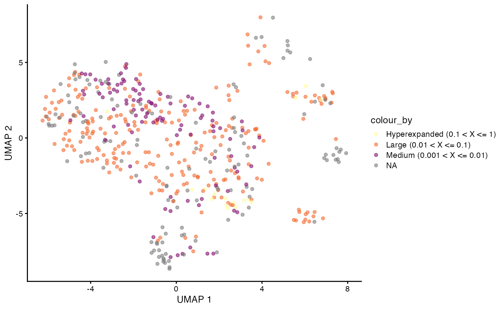
Alternatively, if we want cloneSize to be based on the
frequency of the clone, we can set proportion = FALSE and will need to
change the cloneSize bins to integers. If we haven’t
inspected our clone data, setting the upper limit of the clonal
frequency might be difficult; combineExpression() will
automatically adjust the upper limit to fit the distribution of the
frequencies.
scRep_example <- combineExpression(combined.TCR,
scRep_example,
cloneCall="gene",
group.by = "sample",
proportion = FALSE,
cloneSize=c(Single=1, Small=5, Medium=20, Large=100, Hyperexpanded=500))
# Bug in Seurat 5.3.1 no longer handles NA for DimPlot
# Will Update in Future Commits
# Seurat::DimPlot(scRep_example, group.by = "cloneSize") +
# scale_color_manual(values=rev(colorblind_vector[c(1,3,4,5,7)]))Combining both TCR and BCR
If you have both TCR and BCR enrichment data, or wish to include
information for both gamma-delta and alpha-beta T cells, you can create
a single list containing the outputs of combineTCR() and
combineBCR() and then use
combineExpression().
Major Note: If there are duplicate barcodes (e.g.,
if a cell has both Ig and TCR information), the immune receptor
information will not be added for those cells. It might be worth
checking cluster identities and removing incongruent barcodes in the
products of combineTCR() and combineBCR(). As
an anecdote, the testing
data used to improve this function showed 5-6% barcode overlap.
#This is an example of the process, which will not be evaluated during knit
TCR <- combineTCR(...)
BCR <- combineBCR(...)
list.receptors <- c(TCR, BCR)
seurat <- combineExpression(list.receptors,
seurat,
cloneCall="gene",
proportion = TRUE)combineExpression() is a core function in
scRepertoire that bridges the immune repertoire data with
single-cell gene expression data. It enriches your Seurat or SCE object
with crucial clonal information, including calculated frequencies and
proportions, allowing for integrated analysis of cellular identity and
clonal dynamics. Its flexibility in defining cloneSize and
handling various grouping scenarios makes it adaptable to diverse
experimental designs, even accommodating the integration of both TCR and
BCR data.
Visualizations for Single-Cell Objects
clonalOverlay
Using the dimensional reduction graphs as a reference,
clonalOverlay() generates an overlay of the positions of
clonally-expanded cells. It highlights areas of high clonal frequency or
proportion on your UMAP or tSNE plots.
Key Parameters for clonalOverlay()
-
sc.data: The single-cell object aftercombineExpression(). -
reduction: The dimensional reduction to visualize (e.g., “umap”, “pca”). Default is “pca”. -
cut.category: The metadata variable to use for filtering the overlay (e.g., “clonalFrequency” or “clonalProportion”). -
cutpoint: The lowest clonal frequency or proportion to include in the contour plot. -
bins: The number of contours to draw.
clonalOverlay() can be used to look across all cells or
faceted by a metadata variable using facet.by. The overall
dimensional reduction will be maintained as we facet, while the contour
plots will adjust based on the facet.by variable. The
coloring of the dot plot is based on the active identity of the
single-cell object.
This visualization was authored by Dr. Francesco Mazziotta and inspired by Drs. Carmona and Andreatta and their work with ProjectTIL, a pipeline for annotating T cell subtypes.
clonalOverlay(scRep_example,
reduction = "umap",
cutpoint = 1,
bins = 10,
facet.by = "Patient") +
guides(color = "none")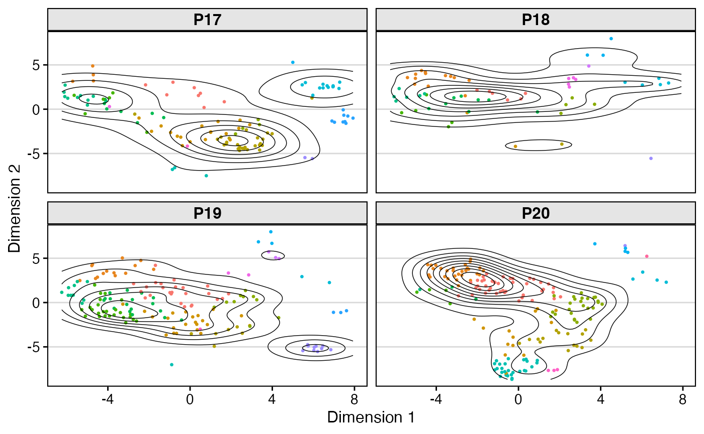
clonalNetwork
Similar to clonalOverlay(), clonalNetwork()
visualizes the network interaction of clones shared between clusters
along the single-cell dimensional reduction. This function shows the
relative proportion of clones flowing from a starting node, with the
ending node indicated by an arrow
Filtering Options for clonalNetwork()
-
filter.clones:- Select a number to isolate the clones comprising the top n number of
cells (e.g.,
filter.clones = 2000). - Select
minto scale all groups to the size of the minimum group.
- Select a number to isolate the clones comprising the top n number of
cells (e.g.,
-
filter.identity: For the identity chosen to visualize, show the “to” and “from” network connections for a single group. -
filter.proportion: Remove clones from the network that comprise less than a certain proportion of clones in groups. -
filter.graph: Remove reciprocal edges from one half of the graph, allowing for cleaner visualization.
Now, visualize the clonal network with no specific identity filter:
#ggraph needs to be loaded due to issues with ggplot
library(ggraph)
#No Identity filter
clonalNetwork(scRep_example,
reduction = "umap",
group.by = "seurat_clusters",
filter.clones = NULL,
filter.identity = NULL,
cloneCall = "aa")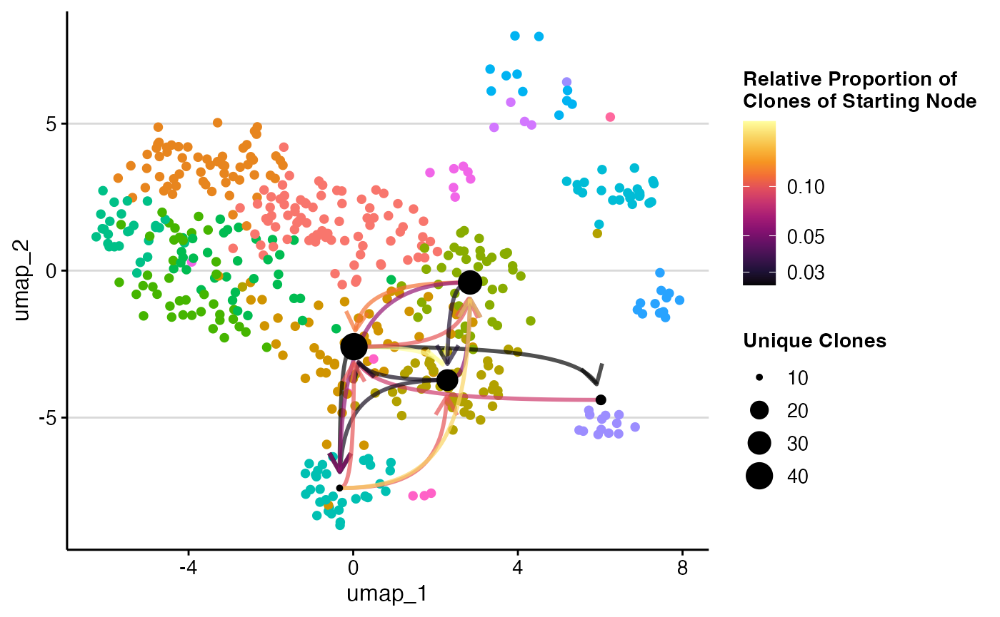
We can look at the clonal relationships relative to a single cluster
using the filter.identity parameter. For example, focusing
on Cluster 3:
#Examining Cluster 3 only
clonalNetwork(scRep_example,
reduction = "umap",
group.by = "seurat_clusters",
filter.identity = 3,
cloneCall = "aa")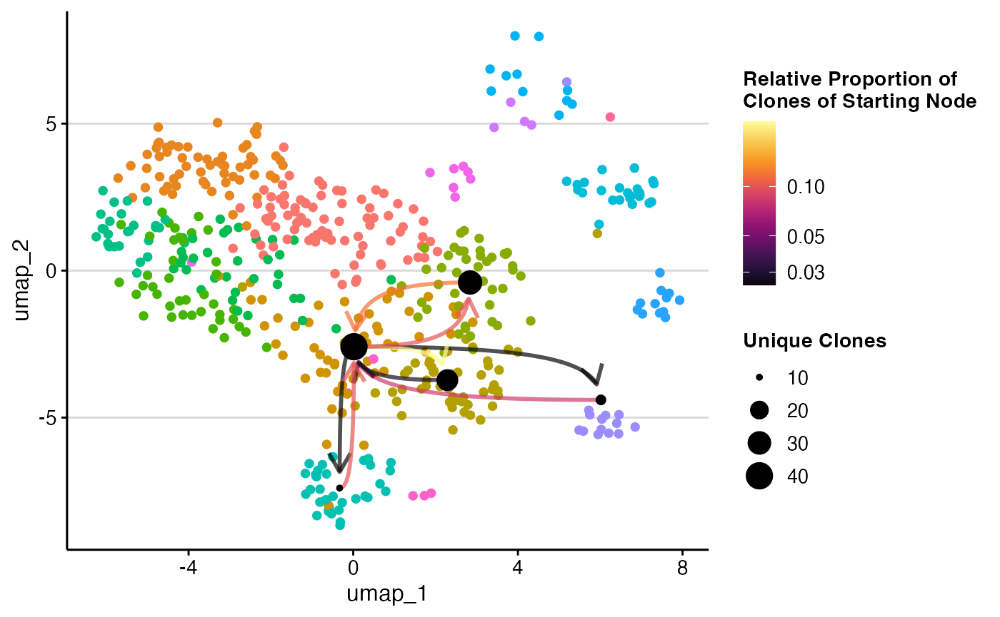
You can also use the exportClones parameter to quickly
get clones that are shared across multiple identity groups, along with
the total number of clone copies in the dataset.
shared.clones <- clonalNetwork(scRep_example,
reduction = "umap",
group.by = "seurat_clusters",
cloneCall = "aa",
exportClones = TRUE)
head(shared.clones)## # A tibble: 6 × 2
## clone sum
## <fct> <int>
## 1 CVVSDNTGGFKTIF_CASSVRRERANTGELFF 11
## 2 CAELNQAGTALIF_CASSQAPFSTSGELFF 3
## 3 CASLSGSARQLTF_CASSSTVAGEQYF 3
## 4 NA_CASSVRRERANTGELFF 3
## 5 CAERGSGGSYIPTF_CASSDPSGRQGPRWDTQYF 2
## 6 CAGAAETSGSRLTF_CASSRLRTGALYEQYF 2highlightClones
The highlightClones() function allows you to
specifically visualize the distribution of particular clonal sequences
on your single-cell dimensional reduction plots. This helps in tracking
the location and expansion of clones of interest.
Key Parameters for highlightClones()
-
cloneCall: The type of sequence to use for highlighting (e.g., “aa”, “nt”, “strict”). -
sequence: A character vector of the specific clonal sequences to highlight.
To highlight the most prominent amino acid sequences: CAERGSGGSYIPTF_CASSDPSGRQGPRWDTQYF and CARKVRDSSYKLIF_CASSDSGYNEQFF:
scRep_example <- highlightClones(scRep_example,
cloneCall= "aa",
sequence = c("CAERGSGGSYIPTF_CASSDPSGRQGPRWDTQYF",
"CARKVRDSSYKLIF_CASSDSGYNEQFF"))
# Bug in Seurat 5.3.1 no longer handles NA for DimPlot
# Will Update in Future Commits
# Seurat::DimPlot(scRep_example, group.by = "highlight") +
# guides(color=guide_legend(nrow=3,byrow=TRUE)) +
# ggplot2::theme(plot.title = element_blank(),
# legend.position = "bottom")clonalOccupy
clonalOccupy() visualizes the count of cells by cluster,
categorized into specific clonal frequency ranges. It uses the cloneSize
metadata variable (generated by combineExpression()) to
plot the number of cells within each clonal expansion designation, using
a secondary variable like cluster. Credit for the idea goes to Drs.
Carmona and Andreatta.
Key Parameters for clonalOccupy() * x.axis:
The variable in the metadata to graph along the x-axis (e.g.,
“seurat_clusters”, “ident”). * label: If TRUE, includes the
number of clones in each category by x.axis variable. *
proportion: If TRUE, converts the stacked bars into
relative proportions. * na.include: If TRUE, visualizes NA
values.
To visualize the count of cells by seurat_clusters based
on cloneSize groupings:
clonalOccupy(scRep_example,
x.axis = "seurat_clusters")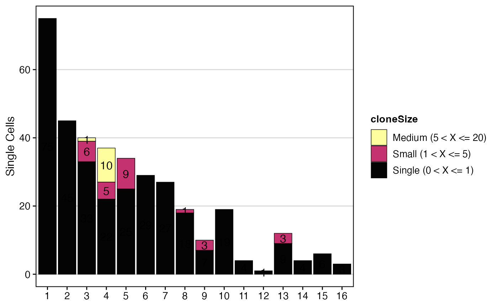
To visualize the proportion of cells by ident (active
identity), without labels:
clonalOccupy(scRep_example,
x.axis = "ident",
proportion = TRUE,
label = FALSE)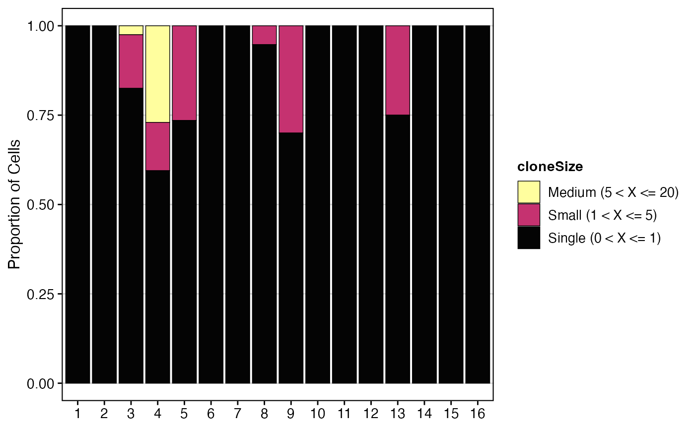
alluvialClones
After the metadata has been modified with clonal information,
alluvialClones() allows you to look at clones across
multiple categorical variables, enabling the examination of the
interchange between these variables. Because this function produces a
graph with each clone arranged by called stratification, it may take
some time depending on the size of the repertoire.
Key Parameters for alluvialClones()
-
y.axes: The columns that will separate the proportional visualizations. -
color: The column header or clone(s) to be highlighted. -
facet: The column label to separate facets. -
alpha: The column header to have gradated opacity. -
top.clones: Show only the top N clones by frequency. -
min.freq: Minimum frequency threshold for displaying flows. -
highlight.clones: Character vector of specific clone sequences to highlight. -
highlight.color: Color to use for highlighted clones (default: “red”).
Basic Alluvial Plot
To visualize clonal flow across “Patient”, “ident”, and “Type”, highlighting specific amino acid clones:
alluvialClones(scRep_example,
clone.call = "aa",
y.axes = c("Patient", "ident", "Type"),
color = c("CVVSDNTGGFKTIF_CASSVRRERANTGELFF", "NA_CASSVRRERANTGELFF")) +
scale_fill_manual(values = c("grey", colorblind_vector[3]))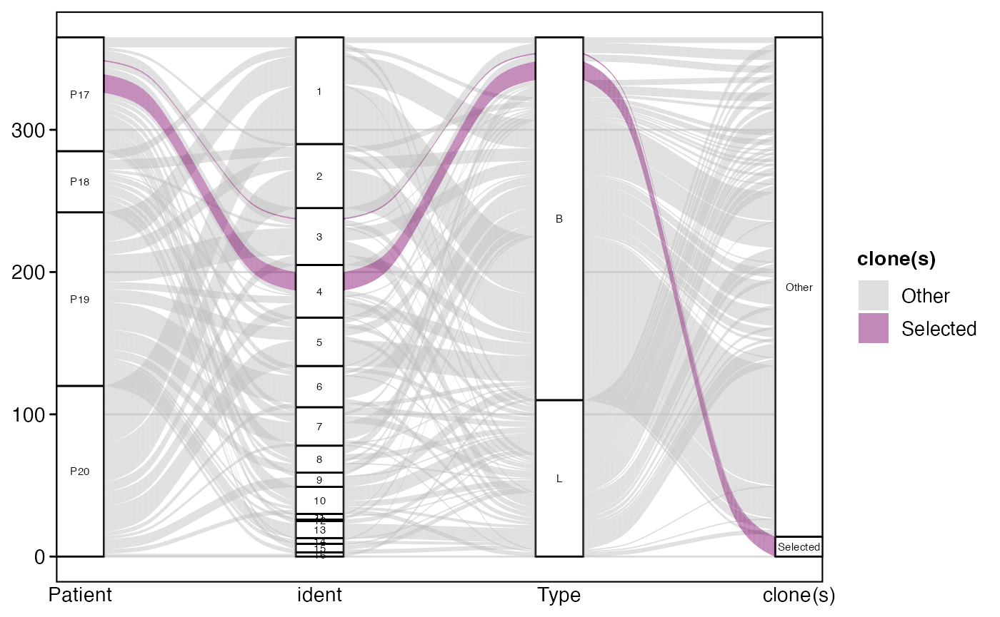
To visualize clonal flow across “Patient”, “ident”, and “Type”, coloring by “ident”:
alluvialClones(scRep_example,
clone.call = "gene",
y.axes = c("Patient", "ident", "Type"),
color = "ident")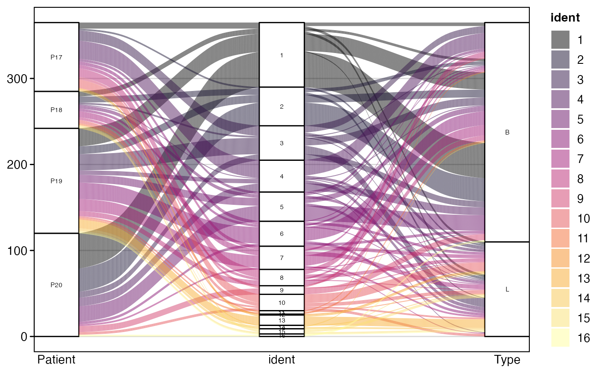
Filtering to Top Clones
When working with large repertoires, it can be helpful to focus on
the most frequent clones. The top.clones parameter allows
you to filter to the top N clones:
alluvialClones(scRep_example,
clone.call = "aa",
y.axes = c("Patient", "ident"),
top.clones = 25,
color = "ident")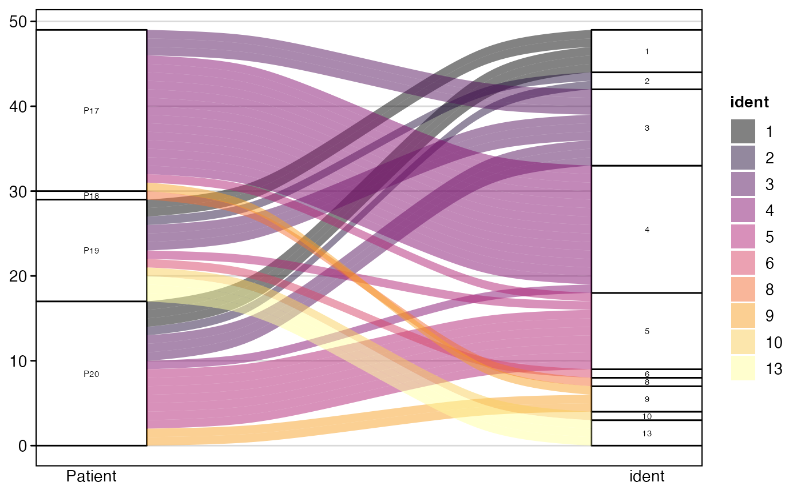
Highlighting Specific Clones
Use highlight.clones to call out specific clones of
interest while showing the context of other clones:
alluvialClones(scRep_example,
clone.call = "aa",
y.axes = c("Patient", "ident", "Type"),
highlight.clones = c("CVVSDNTGGFKTIF_CASSVRRERANTGELFF"),
highlight.color = "red")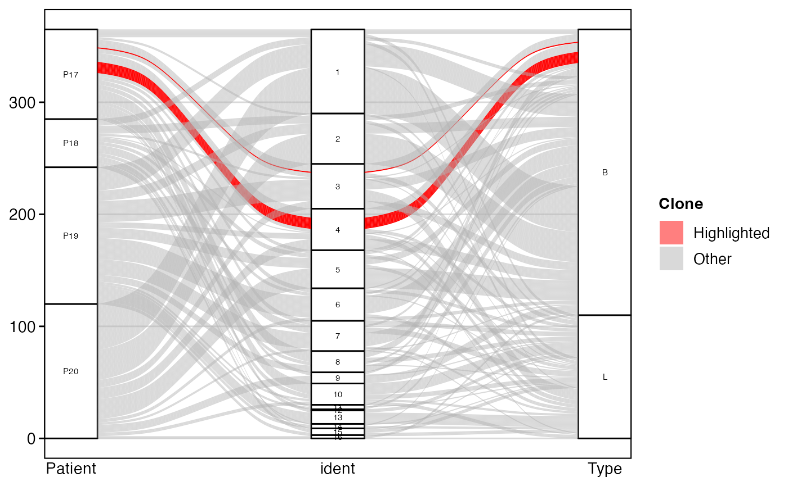
Visual Customization
Fine-tune the appearance with parameters like
stratum.width, flow.alpha, and
label.size:
alluvialClones(scRep_example,
clone.call = "gene",
y.axes = c("Patient", "ident"),
color = "ident",
stratum.width = 0.3,
flow.alpha = 0.7,
label.size = 3)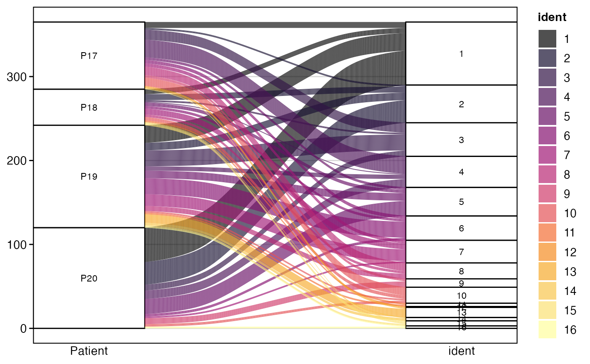
alluvialClones() provides a visual representation of
clonal distribution and movement across multiple categorical
annotations. It is particularly effective for tracking how specific
clones or clonal groups transition between different states, tissues, or
cell types, offering a dynamic perspective on immune repertoire
evolution and function.
getCirclize and vizCirclize
Like alluvial graphs, we can also visualize the interconnection of clusters using chord diagrams from the circlize R package. scRepertoire provides two functions for this:
-
getCirclize()- Generates data for use with the circlize package -
vizCirclize()- A convenient wrapper that handles the circlize plotting automatically
These functions calculate the relative number of unique and shared
clones based on the group.by variable using the product of
combineExpression(). If using the downstream
circlize R package, please read and cite the following manuscript.
Key Parameters for getCirclize() and
vizCirclize()
-
group.by: A column header (or vector of column headers for hierarchical grouping). -
method: The method for calculating link values:"unique"(default),"jaccard", or"overlap". -
proportion: IfTRUE, normalizes the relationship by proportion; ifFALSE(default), uses unique clone counts. -
include.self: IfTRUE, includes counting clones within a single group comparison. -
min.shared: Minimum number of shared clones to include a link.
Quick Visualization with vizCirclize
The simplest way to create a chord diagram is using
vizCirclize():
library(circlize)
library(scales)
vizCirclize(scRep_example,
group.by = "seurat_clusters",
clone.call = "aa")Manual Control with getCirclize
For more control over the visualization, use
getCirclize() to generate the data and then plot with
circlize directly. By default, getCirclize() returns a
simple data frame:
circles <- getCirclize(scRep_example,
group.by = "seurat_clusters")
#Just assigning the normal colors to each cluster
grid.cols <- hue_pal()(length(unique(scRep_example$seurat_clusters)))
names(grid.cols) <- unique(scRep_example$seurat_clusters)
#Graphing the chord diagram
chordDiagram(circles, self.link = 1, grid.col = grid.cols)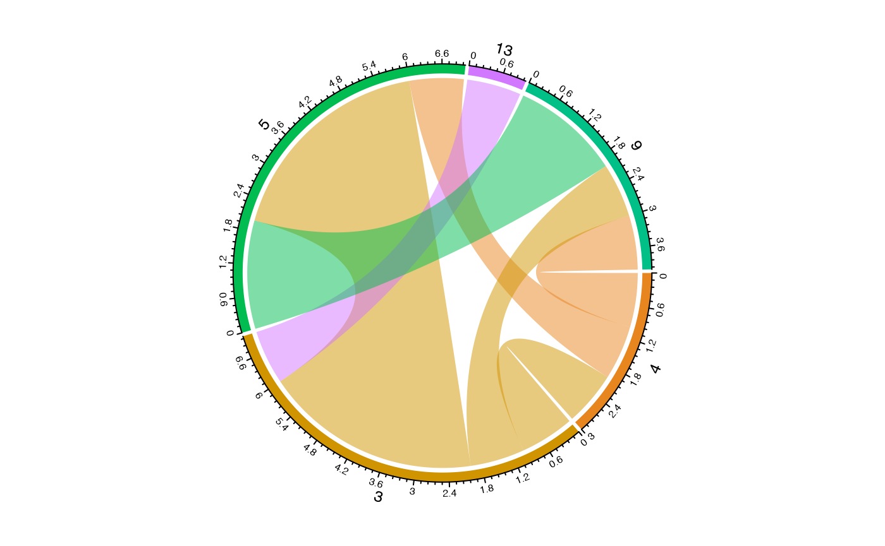
Multi-Level Hierarchical Grouping
A powerful feature is the ability to create hierarchical groupings by
passing a vector of column names to group.by. This creates
compound sector labels:
vizCirclize(scRep_example,
group.by = c("Patient", "Type"),
clone.call = "aa",
min.shared = 1)Directional Flow
Show the direction of clonal sharing with arrows:
vizCirclize(scRep_example,
group.by = "seurat_clusters",
clone.call = "aa",
directional = TRUE)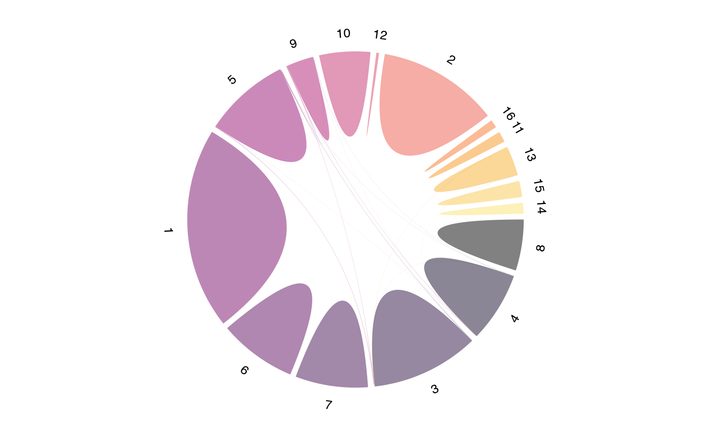
Different Similarity Methods
Use different methods for calculating link values:
# Jaccard similarity
circles.jaccard <- getCirclize(scRep_example,
group.by = "seurat_clusters",
method = "jaccard",
include.metadata = TRUE)
# The include.metadata option returns sector statistics
head(circles.jaccard$sector.stats)## NULLSubsetting and Proportion
This can also be used if we want to explore just the lung-specific T
cells by subsetting the single-cell object. For the sake of this
vignette, we can also look at setting proportion = TRUE to
get a scaled output.
subset <- subset(scRep_example, Type == "L")
circles <- getCirclize(subset, group.by = "ident", proportion = TRUE)
grid.cols <- scales::hue_pal()(length(unique(subset@active.ident)))
names(grid.cols) <- levels(subset@active.ident)
chordDiagram(circles,
self.link = 1,
grid.col = grid.cols,
directional = 1,
direction.type = "arrows",
link.arr.type = "big.arrow")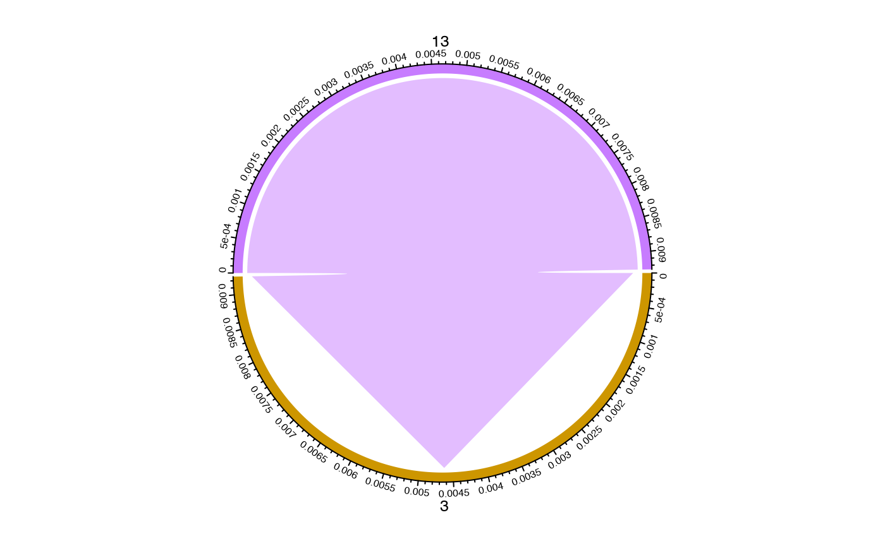
getCirclize() and vizCirclize() facilitate
the creation of visually striking and informative chord diagrams to
represent shared clonal relationships between distinct groups within
your single-cell data. By providing a flexible way to quantify and
format clonal overlap, they enable researchers to effectively illustrate
complex clonal connectivity patterns, which are crucial for
understanding immune communication and migration.
Quantifying Clonal Bias
StartracDiversity
From the excellent work by Zhang et al. (2018, Nature), the authors introduced new methods for looking at clones by cellular origins and cluster identification. We strongly recommend you read and cite their publication when using this function.
To use the StartracDiversity() function, you need the
output of the combineExpression() function and a column in
your metadata that specifies the tissue of origin.
Indices Output from StartracDiversity()
-
expa- Clonal Expansion. Measures the degree of clonal proliferation within a given cell cluster. It is calculated as1 - normalized Shannon entropy, where a higher value indicates that a few clones dominate the cluster.
-
migr- Cross-tissue Migration. Quantifies the movement of clonal T cells between different tissues, as defined by thetypeparameter. This index is based on the entropy of a single clonotype’s distribution across the specified tissues.
-
tran- State Transition. Measures the developmental transition of T cell clones between different functional clusters. This index is calculated from the entropy of a single clonotype’s distribution across the cell clusters identified in the data.
Key Parameters for StartracDiversity()
-
type: The variable in the metadata that provides tissue type. -
group.by: A column header in the metadata to group the analysis by (e.g., “sample”, “treatment”).
By default, StartracDiversity() will calculate all three
indices (expa, migr, and tran)
for each cluster and group you define. This provides a comprehensive
overview of the clonal dynamics in your dataset. The output is a
three-paneled plot, with each panel representing one index.
In the example data, type corresponds to the “Type”
column, which includes “P” (peripheral blood) and “L” (lung)
classifiers. The analysis is grouped by the “Patient” column.
# Calculate and plot all three STARTRAC indices
StartracDiversity(scRep_example,
type = "Type",
group.by = "Patient")Calculating a Single Index
If you’re only interested in one aspect of clonal dynamics, you can
specify it using the index parameter. For example, to only
calculate and plot clonal expansion:
# Calculate and plot only the clonal expansion index
StartracDiversity(scRep_example,
type = "Type",
group.by = "Patient",
index = "expa")Pairwise Migration Analysis
Another feature of StartracDiversity() is the ability to
perform pairwise comparisons. To specifically quantify the migration
between two tissues (e.g., Lung vs. Periphery), set
index = "migr" and tell the function which column to use
for the comparison with pairwise = "Type".
# # Calculate pairwise migration between tissues
StartracDiversity(scRep_example,
type = "Type",
group.by = "Patient",
index = "migr",
pairwise = "Type")clonalBias
A new metric proposed by Massimo et al,
clonalBias(), like STARTRAC, is a clonal metric that seeks
to quantify how individual clones are skewed towards a specific cellular
compartment or cluster. A clone bias of 1 indicates that a
clone is composed of cells from a single compartment or cluster, while a
clone bias of 0 matches the background subtype
distribution. Please read and cite the linked manuscript if using
clonalBias()
Key Parameter(s) for clonalBias()
-
group.by: A column header in the metadata that bias will be based on. -
split.by: The variable to use for calculating the baseline frequencies (e.g., “Type” for lung vs peripheral blood comparison) -
n.boots: Number of bootstraps to downsample. -
min.expand: Clone frequency cut-off for the purpose of comparison (default = 10).
Here we calculate and plot clonal bias using aa clone
calls, splitting by “Patient” and grouping by “seurat_clusters”, with a
minimum expansion of 5 and 10 bootstraps:
clonalBias(scRep_example,
cloneCall = "aa",
split.by = "Patient",
group.by = "seurat_clusters",
n.boots = 10,
min.expand =5)Clustering by Edit Distance
clonalCluster: Cluster by Sequence Similarity
The clonalCluster() function provides a powerful method
to group clonotypes based on sequence similarity. It calculates the edit
distance between CDR3 sequences and uses this information to build a
network, identifying closely related clusters of T or B cell receptors.
This functionality allows for a more nuanced definition of a “clone”
that extends beyond identical sequence matches.
Core Concepts
The clustering process follows these key steps:
-
Sequence Selection: The function selects either the
nucleotide (
sequence = "nt") or amino acid (sequence = "aa") CDR3 sequences for a specified chain. -
Distance Calculation: It calculates the edit
distance between all pairs of sequences. By default, it also requires
sequences to share the same V gene (
use.v = TRUE). - Network Construction: An edge is created between any two sequences that meet the similarity threshold, forming a network graph.
-
Clustering: A graph-based clustering algorithm is
run to identify connected components or communities within the network.
By default, it identifies all directly or indirectly connected sequences
as a single cluster (
cluster.method = "components"). -
Output: The function can either add the resulting
cluster IDs to the input object, return an
igraphobject for network analysis, or export a sparse adjacency matrix.
Understanding the threshold Parameter
The behavior of the threshold parameter is critical for controlling cluster granularity:
-
Normalized Similarity (threshold < 1): When the
threshold is a value between 0 and 1 (e.g.,
0.85), it represents the normalized edit distance (Levenshtein distance / mean sequence length). A higher value corresponds to a stricter similarity requirement. This is useful for comparing sequences of varying lengths. - Raw Edit Distance (threshold >= 1): When the threshold is a whole number (e.g., 2), it represents the maximum raw edit distance allowed. A lower value corresponds to a stricter similarity requirement. This is useful when you want to allow a specific number of mutations.
Key Parameter(s) for clonalCluster()
-
sequence: Specifies whether to cluster based onaa(amino acid) ornt(nucleotide) sequences. -
threshold: The similarity threshold for clustering. Values< 1are normalized similarity, while values>= 1are raw edit distance. -
group.by: A column header in the metadata or lists to group the analysis by (e.g., “sample”, “treatment”). IfNULL, clusters are calculated across all sequences. -
use.V: IfTRUE, sequences must share the same V gene to be clustered together. -
use.J: IfTRUE, sequences must share the same J gene to be clustered together. -
cluster.method: The clustering algorithm to use. Defaults tocomponents, which finds connected subgraphs. -
cluster.prefix: A character prefix to add to the cluster names (e.g., “cluster.”). -
exportGraph: IfTRUE, returns an igraph object of the sequence network. -
exportAdjMatrix: IfTRUE, returns a sparse adjacency matrix (dgCMatrix) of the network.
Demonstrating Basic Use
To run clustering on the first two samples for the TRA chain, using amino acid sequences with a normalized similarity threshold of 0.85:
# Run clustering on the first two samples for the TRA chain
sub_combined <- clonalCluster(combined.TCR[c(1,2)],
chain = "TRA",
sequence = "aa",
threshold = 0.85)
# View the new cluster column
head(sub_combined[[1]][, c("barcode", "TCR1", "TRA.Cluster")])## barcode TCR1 TRA.Cluster
## 1 P17B_AGCGGTCCAAAGGAAG-1 <NA> <NA>
## 2 P17B_GGCTCGAGTCGCGGTT-1 <NA> <NA>
## 3 P17B_CGCGTTTTCGGCTACG-1 <NA> <NA>
## 4 P17B_CACCAGGGTTCCTCCA-1 <NA> <NA>
## 5 P17B_TCTATTGCAGGTGCCT-1 <NA> <NA>
## 6 P17B_GCTGGGTGTACGAAAT-1 <NA> <NA>Demonstrating Clustering with a Single-Cell Object
You can calculate clusters based on specific metadata variables
within a single-cell object by using the group.by
parameter. This is useful for analyzing clusters on a per-sample or
per-patient basis without subsetting the data first.
First, add patient and type information to the
scRep_example Seurat object:
#Adding patient information
scRep_example$Patient <- substr(scRep_example$orig.ident, 1,3)
#Adding type information
scRep_example$Type <- substr(scRep_example$orig.ident, 4,4)Now, run clustering on the scRep_example Seurat object,
grouping calculations by “Patient”:
# Run clustering, but group calculations by "Patient"
scRep_example <- clonalCluster(scRep_example,
chain = "TRA",
sequence = "aa",
threshold = 0.85,
group.by = "Patient")
#Define color palette
num_clusters <- length(unique(na.omit(scRep_example$TRA.Cluster)))
cluster_colors <- hcl.colors(n = num_clusters, palette = "inferno")
# Bug in Seurat 5.3.1 no longer handles NA for DimPlot
# Will Update in Future Commits
# DimPlot(scRep_example, group.by = "TRA.Cluster") +
# scale_color_manual(values = cluster_colors, na.value = "grey") +
# NoLegend()Returning an igraph Object:
Instead of modifying the input object, clonalCluster()
can export the underlying network structure for advanced analysis. Set
exportGraph = TRUE to get an igraph object consisting of
the networks of barcodes by the indicated clustering scheme.
set.seed(42)
#Clustering Patient 19 samples
igraph.object <- clonalCluster(combined.TCR[c(5,6)],
chain = "TRB",
sequence = "aa",
group.by = "sample",
threshold = 0.85,
exportGraph = TRUE)
#Setting color scheme
col_legend <- factor(igraph::V(igraph.object)$group)
col_samples <- hcl.colors(2,"inferno")[as.numeric(col_legend)]
color.legend <- factor(unique(igraph::V(igraph.object)$group))
sample.vertices <- V(igraph.object)[sample(length(igraph.object), 500)]
subgraph.object <- induced_subgraph(igraph.object, vids = sample.vertices)
V(subgraph.object)$degrees <- igraph::degree(subgraph.object)
edge_alpha_color <- adjustcolor("gray", alpha.f = 0.3)
#Plotting
plot(subgraph.object,
layout = layout_nicely(subgraph.object),
vertex.label = NA,
vertex.size = sqrt(igraph::V(subgraph.object)$degrees),
vertex.color = col_samples[sample.vertices],
vertex.frame.color = "white",
edge.color = edge_alpha_color,
edge.arrow.size = 0.05,
edge.curved = 0.05,
margin = -0.1)
legend("topleft",
legend = levels(color.legend),
pch = 16,
col = unique(col_samples),
bty = "n")Returning a Sparse Adjacency Matrix
For computational applications, you can export a sparse adjacency
matrix using exportAdjMatrix = TRUE. This matrix represents
the connections between all barcodes in the input data, with the edit
distance that meet the threshold in places of connection.
# Generate the sparse matrix
adj.matrix <- clonalCluster(combined.TCR[c(1,2)],
chain = "TRB",
exportAdjMatrix = TRUE)
# View the dimensions and a snippet of the matrix
dim(adj.matrix)## [1] 5698 5698
print(adj.matrix[1:10, 1:10])## 10 x 10 sparse Matrix of class "dgCMatrix"##
## P17B_AGCGGTCCAAAGGAAG-1 . . . . . . . . . .
## P17B_GGCTCGAGTCGCGGTT-1 . . . . . . . . . .
## P17B_CGCGTTTTCGGCTACG-1 . . . . . . . . . .
## P17B_CACCAGGGTTCCTCCA-1 . . . . 1e-06 . . . . .
## P17B_TCTATTGCAGGTGCCT-1 . . . 1e-06 . . . . . .
## P17B_GCTGGGTGTACGAAAT-1 . . . . . . . . . .
## P17B_AGGGTGACATTGGTAC-1 . . . . . . . . . .
## P17B_GGAACTTCATCGGTTA-1 . . . . . . . . . .
## P17B_ACGGCCACATCCGTGG-1 . . . . . . . . . .
## P17B_CACATAGTCCTAAGTG-1 . . . . . . . . . .Using Both Chains
You can analyze the combined network of both TRA/TRB or IGH/IGL
chains by setting chain = "both". This will create a single
cluster column named Multi.Cluster.
# Cluster using both TRB and TRA chains simultaneously
clustered_both <- clonalCluster(combined.TCR[c(1,2)],
chain = "both")
# View the new "Multi.Cluster" column
head(clustered_both[[1]][, c("barcode", "TCR1", "TCR2", "Multi.Cluster")])## barcode TCR1 TCR2 Multi.Cluster
## 1 P17B_AGCGGTCCAAAGGAAG-1 <NA> TRBV10-2.None.TRBJ2-1.TRBC2 <NA>
## 2 P17B_GGCTCGAGTCGCGGTT-1 <NA> TRBV10-3.None.TRBJ2-1.TRBC2 cluster.394
## 3 P17B_CGCGTTTTCGGCTACG-1 <NA> TRBV11-3.None.TRBJ1-2.TRBC1 <NA>
## 4 P17B_CACCAGGGTTCCTCCA-1 <NA> TRBV11-3.None.TRBJ2-3.TRBC2 cluster.23
## 5 P17B_TCTATTGCAGGTGCCT-1 <NA> TRBV11-3.None.TRBJ2-3.TRBC2 cluster.23
## 6 P17B_GCTGGGTGTACGAAAT-1 <NA> TRBV12-4.None.TRBJ1-2.TRBC1 cluster.262Using Different Clustering Algorithms
While the default cluster.method = "components" is
robust, you can use other algorithms from the igraph package, such as
walktrap or louvain, to potentially uncover
different community structures.
# Cluster using the walktrap algorithm
graph_walktrap <- clonalCluster(combined.TCR[c(1,2)],
cluster.method = "walktrap",
exportGraph = TRUE)
# Compare the number of clusters found
length(unique(V(graph_walktrap)$cluster))## [1] 419Overall, clonalCluster() is a versatile function for
defining and analyzing clonal relationships based on sequence
similarity. It allows researchers to move beyond exact sequence matches,
providing a more comprehensive understanding of clonal families. The
ability to customize parameters like threshold,
chain selection, and group.by ensures
adaptability to diverse research questions. Furthermore, the option to
export igraph objects or sparse adjacency matrices provides
advanced users with the tools for in-depth network analysis.
Conclusion
This has been a general overview of the capabilities of scRepertoire from the initial processing and visualization to attach to the mRNA expression values in a single-cell object. If you have any questions, comments, or suggestions, please visit the GitHub repository.
Session Info
## R version 4.5.1 (2025-06-13)
## Platform: aarch64-apple-darwin20
## Running under: macOS Sonoma 14.6
##
## Matrix products: default
## BLAS: /Library/Frameworks/R.framework/Versions/4.5-arm64/Resources/lib/libRblas.0.dylib
## LAPACK: /Library/Frameworks/R.framework/Versions/4.5-arm64/Resources/lib/libRlapack.dylib; LAPACK version 3.12.1
##
## locale:
## [1] en_US.UTF-8/en_US.UTF-8/en_US.UTF-8/C/en_US.UTF-8/en_US.UTF-8
##
## time zone: America/Chicago
## tzcode source: internal
##
## attached base packages:
## [1] stats4 stats graphics grDevices utils datasets methods
## [8] base
##
## other attached packages:
## [1] scales_1.4.0 circlize_0.4.16
## [3] ggraph_2.2.2 scRepertoire_2.7.2
## [5] igraph_2.2.1 Seurat_5.3.1.1000
## [7] SeuratObject_5.2.0 sp_2.2-0
## [9] scater_1.36.0 ggplot2_4.0.1
## [11] scuttle_1.18.0 SingleCellExperiment_1.30.1
## [13] SummarizedExperiment_1.38.1 Biobase_2.68.0
## [15] GenomicRanges_1.60.0 GenomeInfoDb_1.44.3
## [17] IRanges_2.42.0 S4Vectors_0.48.0
## [19] BiocGenerics_0.54.1 generics_0.1.4
## [21] MatrixGenerics_1.20.0 matrixStats_1.5.0
## [23] BiocStyle_2.36.0
##
## loaded via a namespace (and not attached):
## [1] RcppAnnoy_0.0.22 splines_4.5.1 later_1.4.4
## [4] tibble_3.3.0 polyclip_1.10-7 fastDummies_1.7.5
## [7] lifecycle_1.0.4 processx_3.8.6 globals_0.18.0
## [10] lattice_0.22-7 MASS_7.3-65 magrittr_2.0.4
## [13] plotly_4.11.0 sass_0.4.10 rmarkdown_2.30
## [16] jquerylib_0.1.4 yaml_2.3.11 httpuv_1.6.16
## [19] otel_0.2.0 sctransform_0.4.2 spam_2.11-1
## [22] spatstat.sparse_3.1-0 reticulate_1.44.1 chromote_0.5.1
## [25] cowplot_1.2.0 pbapply_1.7-4 RColorBrewer_1.1-3
## [28] abind_1.4-8 rvest_1.0.5 Rtsne_0.17
## [31] purrr_1.2.0 hash_2.2.6.3 tweenr_2.0.3
## [34] evmix_2.12 GenomeInfoDbData_1.2.14 ggrepel_0.9.6
## [37] irlba_2.3.5.1 listenv_0.10.0 spatstat.utils_3.2-0
## [40] iNEXT_3.0.2 MatrixModels_0.5-4 goftest_1.2-3
## [43] RSpectra_0.16-2 spatstat.random_3.4-3 fitdistrplus_1.2-4
## [46] parallelly_1.45.1 pkgdown_2.2.0 codetools_0.2-20
## [49] DelayedArray_0.34.1 xml2_1.5.1 ggforce_0.5.0
## [52] shape_1.4.6.1 tidyselect_1.2.1 UCSC.utils_1.4.0
## [55] farver_2.1.2 ScaledMatrix_1.16.0 viridis_0.6.5
## [58] spatstat.explore_3.6-0 jsonlite_2.0.0 BiocNeighbors_2.2.0
## [61] tidygraph_1.3.1 progressr_0.18.0 ggalluvial_0.12.5
## [64] ggridges_0.5.7 survival_3.8-3 systemfonts_1.3.1
## [67] tools_4.5.1 ragg_1.5.0 ica_1.0-3
## [70] Rcpp_1.1.0 glue_1.8.0 gridExtra_2.3
## [73] SparseArray_1.8.1 xfun_0.54 websocket_1.4.4
## [76] dplyr_1.1.4 withr_3.0.2 BiocManager_1.30.27
## [79] fastmap_1.2.0 SparseM_1.84-2 digest_0.6.39
## [82] rsvd_1.0.5 R6_2.6.1 mime_0.13
## [85] colorspace_2.1-2 textshaping_1.0.4 scattermore_1.2
## [88] tensor_1.5.1 spatstat.data_3.1-9 utf8_1.2.6
## [91] tidyr_1.3.1 data.table_1.17.8 graphlayouts_1.2.2
## [94] httr_1.4.7 htmlwidgets_1.6.4 S4Arrays_1.8.1
## [97] uwot_0.2.4 pkgconfig_2.0.3 gtable_0.3.6
## [100] lmtest_0.9-40 S7_0.2.1 XVector_0.48.0
## [103] htmltools_0.5.9 dotCall64_1.2 bookdown_0.46
## [106] png_0.1-8 spatstat.univar_3.1-5 ggdendro_0.2.0
## [109] knitr_1.50 rstudioapi_0.17.1 rjson_0.2.23
## [112] reshape2_1.4.5 nlme_3.1-168 GlobalOptions_0.1.3
## [115] cachem_1.1.0 zoo_1.8-14 stringr_1.6.0
## [118] KernSmooth_2.23-26 parallel_4.5.1 miniUI_0.1.2
## [121] vipor_0.4.7 desc_1.4.3 pillar_1.11.1
## [124] grid_4.5.1 vctrs_0.6.5 RANN_2.6.2
## [127] promises_1.5.0 BiocSingular_1.24.0 beachmat_2.24.0
## [130] xtable_1.8-4 cluster_2.1.8.1 beeswarm_0.4.0
## [133] evaluate_1.0.5 isoband_0.2.7 cli_3.6.5
## [136] compiler_4.5.1 rlang_1.1.6 crayon_1.5.3
## [139] future.apply_1.20.0 labeling_0.4.3 ps_1.9.1
## [142] immApex_1.4.4 plyr_1.8.9 fs_1.6.6
## [145] ggbeeswarm_0.7.3 stringi_1.8.7 viridisLite_0.4.2
## [148] deldir_2.0-4 BiocParallel_1.42.2 gsl_2.1-9
## [151] lazyeval_0.2.2 spatstat.geom_3.6-1 quantreg_6.1
## [154] Matrix_1.7-4 RcppHNSW_0.6.0 patchwork_1.3.2
## [157] future_1.68.0 shiny_1.12.0 ROCR_1.0-11
## [160] memoise_2.0.1 bslib_0.9.0